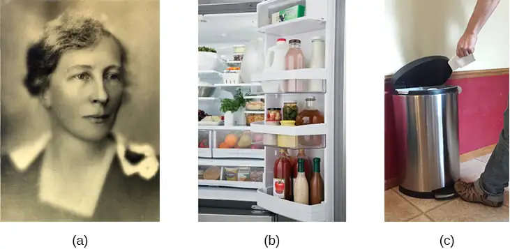
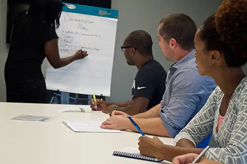
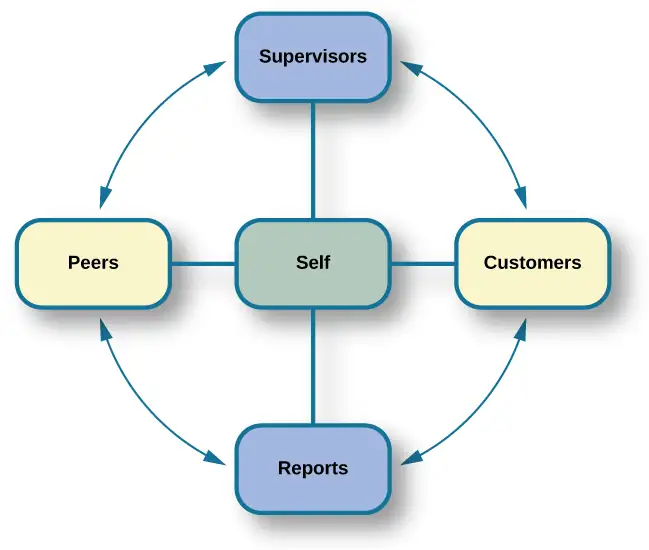
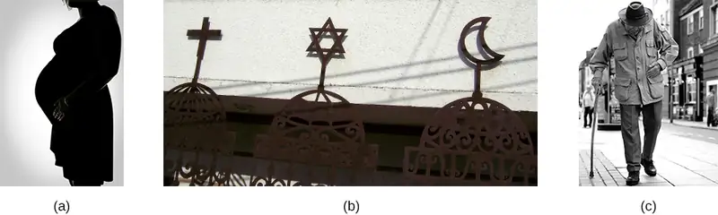

Chapter 13: Industrial-Organizational Psychology¶
Introduction¶
In October 2019, Social Security Administration Commissioner Andrew Saul announced that the Social Security Administration would end a telework program it began 6 years previous serving approximately 12,000 of its employees. Then-Deputy Commissioner Grace Kim wrote a letter to Social Security employees explaining the reasons the program was ending and cited an increased workload and a backlog of cases as reasons for ending the pilot program. This change in the telework policy came on the heels of a negotiation between the American Federal Government Employee Union and the Social Security Administration, a negotiation that had to be brokered by the Federal Services Impasse Panel (a third-party federal organization developed specifically to arbitrate in situations where negotiations between union officials and federal organizations break down and progress halts between the organization and the union representatives) (Wagner, 2019a).
The May 2019 decision by the panel gave Social Security Agency managers the ability to limit or restrict telework for employees using their discretion to ensure that all tasks were being completed and wait times were normal. One of the biggest reasons cited for this was that the organization was able to provide evidence that after the implementation of a telework program, the average wait time for individuals temporarily increased, causing a backlog of work to be completed at a later date. Although the Social Security Administration pushed the official end date for all telework in the agency to March of 2020, the program was officially ended. In the wake of the COVID-19 pandemic, Congress requested a review of the telework policy and raised questions about whether it should be revived to serve as a preventative measure for reducing and slowing the spread of the virus (Wagner, 2019b). Could this allow employees to continue working while not coming to the workplace in order to help prevent the spread of illness? What were the benefits versus the costs of implementing a telework policy again for employees as the spread of the virus continued? What did previous research show related to the positive and negative effects on the organization and the employees with respect to telework?
13.1 What Is Industrial and Organizational Psychology?¶
Learning Objectives
By the end of this section, you will be able to:
- Understand the scope of study in the field of industrial and organizational psychology
- Describe the history of industrial and organizational psychology
In 2019, people who worked in the United States spent an average of about 42–54 hours per week working (Bureau of Labor Statistics—U.S. Department of Labor, 2019). Sleeping was the only other activity they spent more time on with an average of about 43–62 hours per week. The workday is a significant portion of workers’ time and energy. It impacts their lives and their family’s lives in positive and negative physical and psychological ways. Industrial and organizational (I-O) psychology is a branch of psychology that studies how human behavior and psychology affect work and how they are affected by work.
Industrial and organizational psychologists work in four main contexts: academia, government, consulting firms, and business. Most I-O psychologists have a master’s or doctorate degree. The field of I-O psychology can be divided into three broad areas (Figure 13.2 and Figure 13.3): industrial, organizational, and human factors. Industrial psychology is concerned with describing job requirements and assessing individuals for their ability to meet those requirements. In addition, once employees are hired, industrial psychology studies and develops ways to train, evaluate, and respond to those evaluations. As a consequence of its concern for candidate characteristics, industrial psychology must also consider issues of legality regarding discrimination in hiring. Organizational psychology is a discipline interested in how the relationships among employees affect those employees and the performance of a business. This includes studying worker satisfaction, motivation, and commitment. This field also studies management, leadership, and organizational culture, as well as how an organization’s structures, management and leadership styles, social norms, and role expectations affect individual behavior. As a result of its interest in worker wellbeing and relationships, organizational psychology also considers the subjects of harassment, including sexual harassment, and workplace violence. Human factors psychology is the study of how workers interact with the tools of work and how to design those tools to optimize workers’ productivity, safety, and health. These studies can involve interactions as straightforward as the fit of a desk, chair, and computer to a human having to sit on the chair at the desk using the computer for several hours each day. They can also include the examination of how humans interact with complex displays and their ability to interpret them accurately and quickly. In Europe, this field is referred to as ergonomics.
![“The figure includes an illustration that shows a person seated at a desk. Measurements are provided showing the proper distance and angle from work equipment. The labels are as follows: Viewing distance from head to monitor should be 19–24 inches.” For the viewing angle, the eyes should be about level with the top of the screen. The chair should provide lumbar support for the lower back. The forearm and upper arm should be at a 90 degree angle, with wrists straight over the keyboard. The seat back angle should also be 90 degrees, as should the angle of the bend of the knees. The top of the knees should be between 23 and 28 inches from the floor. If this distance cannot be met due to short stature, a footrest should be used below the feet. The seat should have an adjustable height to help in posturing oneself according to these suggested angles and distances. The figure also includes three photos that show different workspaces. The first photo shows a man sitting on an exercise ball at a desk. The second photo shows a man standing at a desk. The third photo shows a man riding a stationary bicycle at his desk.](img/cnx-psych-13-01-humfact.webp)
Occupational health psychology (OHP) deals with the stress, diseases, and disorders that can affect employees as a result of the workplace. As such, the field is informed by research from the medical, biological, psychological, organizational, human factors, human resources, and industrial fields. Individuals in this field seek to examine the ways in which the organization affects the quality of work life for an employee and the responses that employees have towards their organization or as a result of their organization’s influence on them. The responses for employees are not limited to the workplace as there may be some spillover into their personal lives outside of work, especially if there is not good work-life balance. The ultimate goal of an occupational health psychologist is to improve the overall health and well-being of an individual, and, as a result, increase the overall health of the organization (Society for Occupational Health Psychology, 2020).
In 2009, the field of humanitarian work psychology (HWP) was developed as the brainchild of a small group of I-O psychologists who met at a conference. Realizing they had a shared set of goals involving helping those who are underserved and underprivileged, the I-O psychologists formally formed the group in 2012 and have approximately 300 members worldwide. Although this is a small number, the group continues to expand. The group seeks to help marginalized members of society, such as people with low income, find work. In addition, they help to determine ways to deliver humanitarian aid during major catastrophes. The Humanitarian Work Psychology group can also reach out to those in the local community who do not have the knowledge, skills, and abilities (KSAs) to be able to find gainful employment that would enable them to not need to receive aid. In both cases, humanitarian work psychologists try to help the underserved individuals develop KSAs that they can use to improve their lives and their current situations. When ensuring these underserved individuals receive training or education, the focus is on skills that, once learned, will never be forgotten and can serve individuals throughout their lifetimes as they seek employment (APA, 2016). Table 13.1 summarizes the main fields in I-O psychology, their focuses, and jobs within each field.
Table 13.1
| Fields of Industrial Organizational Psychology | ||
|---|---|---|
| Field of I-O Psychology | Description | Types of Jobs |
| Industrial Psychology | Specializes and focuses on the retention of employees and hiring practices to ensure the least number of firings and the greatest number of hirings relative to the organization’s size. | Personnel Analyst Instructional Designer Professor Research Analyst |
| Organizational Psychology | Works with the relationships that employees develop with their organizations and conversely that their organization develops with them. In addition, studies the relationships that develop between co-workers and how that is influenced by organizational norms. | HR Research Specialist Professor Project Consultant Personnel Psychologist Test Developer Training Developer Leadership Developer Talent Developer |
| Human Factors and Engineering | Researches advances and changes in technology in an effort to improve the way technology is used by consumers, whether with consumer products, technologies, transportation, work environments, or communications. Seeks to be better able to predict the ways in which people can and will utilize technology and products in an effort to provide improved safety and reliability. | Professor Ergonomist Safety Scientist Project Consultant Inspector Research Scientist Marketer Product Development |
| Humanitarian Work Psychology | Works to improve the conditions of individuals who have faced serious disaster or who are part of an underserved population. Focuses on labor relations, enhancing public health services, effects on populations due to climate change, recession, and diseases. | Professor Instructional Designer Research Scientist Counselor Consultant Program Manager Senior Response Officer |
| Occupational Health Psychology | Concerned with the overall well-being of both employees and organizations. | Occupational Therapist Research Scientist Consultant Human Resources (HR) Specialist Professor |
Link to Learning
Find out what I-O psychologists do on the Society for Industrial and Organizational Psychology (SIOP) website—a professional organization for people working in the discipline. This site also offers several I-O psychologist profiles.
The Historical Development of Industrial and Organizational Psychology¶
Industrial and organizational psychology had its origins in the early 20th century. Several influential early psychologists studied issues that today would be categorized as industrial psychology: James Cattell (1860–1944), Hugo Münsterberg (1863–1916), Walter Dill Scott (1869–1955), Robert Yerkes (1876–1956), Walter Bingham (1880–1952), and Lillian Gilbreth (1878–1972). Cattell, Münsterberg, and Scott had been students of Wilhelm Wundt, the father of experimental psychology. Some of these researchers had been involved in work in the area of industrial psychology before World War I. Cattell’s contribution to industrial psychology is largely reflected in his founding of a psychological consulting company, which is still operating today, called the Psychological Corporation, and in the accomplishments of students at Columbia in the area of industrial psychology. In 1913, Münsterberg published Psychology and Industrial Efficiency, which covered topics such as employee selection, employee training, and effective advertising.
Scott was one of the first psychologists to apply psychology to advertising, management, and personnel selection. In 1903, Scott published two books: The Theory of Advertising and Psychology of Advertising. They are the first books to describe the use of psychology in the business world. By 1911 he published two more books, Influencing Men in Business and Increasing Human Efficiency in Business. In 1916 a newly formed division in the Carnegie Institute of Technology hired Scott to conduct applied research on employee selection (Katzell & Austin, 1992).
The focus of all this research was in what we now know as industrial psychology; it was only later in the century that the field of organizational psychology developed as an experimental science (Katzell & Austin, 1992). In addition to their academic positions, these researchers also worked directly for businesses as consultants.
When the United States entered World War I in April 1917, the work of psychologists working in this discipline expanded to include their contributions to military efforts. At that time Yerkes was the president of the 25-year-old American Psychological Association (APA). The APA is a professional association in the United States for clinical and research psychologists. Today the APA performs a number of functions including holding conferences, accrediting university degree programs, and publishing scientific journals. Yerkes organized a group under the Surgeon General’s Office (SGO) that developed methods for screening and selecting enlisted men. They developed the Army Alpha test to measure mental abilities. The Army Beta test was a non-verbal form of the test that was administered to illiterate and non-English-speaking draftees. Scott and Bingham organized a group under the Adjutant General’s Office (AGO) with the goal of developing selection methods for officers. They created a catalogue of occupational needs for the Army, essentially a job-description system and a system of performance ratings and occupational skill tests for officers (Katzell & Austin, 1992). After the war, work on personnel selection continued. For example, Millicent Pond researched the selection of factory workers, comparing the results of pre-employment tests with various indicators of job performance (Vinchur & Koppes, 2014).
From 1929 to 1932 Elton Mayo (1880–1949) and his colleagues began a series of studies at a plant near Chicago, Western Electric’s Hawthorne Works (Figure 13.4). This long-term project took industrial psychology beyond just employee selection and placement to a study of more complex problems of interpersonal relations, motivation, and organizational dynamics. These studies mark the origin of organizational psychology. They began as research into the effects of the physical work environment (e.g., level of lighting in a factory), but the researchers found that the psychological and social factors in the factory were of more interest than the physical factors. These studies also examined how human interaction factors, such as supervisorial style, increased or decreased productivity.
Analysis of the findings by later researchers led to the term the Hawthorne effect, which describes the increase in performance of individuals who are aware they are being observed by researchers or supervisors (Figure 13.5). What the original researchers found was that any change in a variable, such as lighting levels, led to an improvement in productivity; this was true even when the change was negative, such as a return to poor lighting. The effect faded when the attention faded (Roethlisberg & Dickson, 1939). The Hawthorne-effect concept endures today as an important experimental consideration in many fields and a factor that has to be controlled for in an experiment. In other words, an experimental treatment of some kind may produce an effect simply because it involves greater attention of the researchers on the participants (McCarney et al., 2007).
Link to Learning
Watch this video of first-hand accounts of the original Hawthorne studies to learn more.
In the 1930s, researchers began to study employees’ feelings about their jobs. Kurt Lewin also conducted research on the effects of various leadership styles, team structure, and team dynamics (Katzell & Austin, 1992). Lewin is considered the founder of social psychology and much of his work and that of his students produced results that had important influences in organizational psychology. Lewin and his students’ research included an important early study that used children to study the effect of leadership style on aggression, group dynamics, and satisfaction (Lewin, Lippitt, & White, 1939). Lewin was also responsible for coining the term group dynamics, and he was involved in studies of group interactions, cooperation, competition, and communication that bear on organizational psychology.
Parallel to these studies in industrial and organizational psychology, the field of human factors psychology was also developing. Frederick Taylor was an engineer who saw that if one could redesign the workplace there would be an increase in both output for the company and wages for the workers. In 1911 he put forward his theory in a book titled The Principles of Scientific Management (Figure 13.6). His book examines management theories, personnel selection and training, as well as the work itself, using time and motion studies. Taylor argued that the principal goal of management should be to make the most money for the employer, along with the best outcome for the employee. He believed that the best outcome for the employee and management would be achieved through training and development so that each employee could provide the best work. He believed that by conducting time and motion studies for both the organization and the employee, the best interests of both were addressed. Time-motion studies were methods that aimed to improve work by dividing different types of operations into sections that could be measured. These analyses were used to standardize work and to check the efficiency of people and equipment.
Personnel selection is a process used by recruiting personnel within the company to recruit and select the best candidates for the job. Training may need to be conducted depending on what skills the hired candidate has. Often companies will hire someone with the personality that fits in with others but who may be lacking in skills. Skills can be taught, but personality cannot be easily changed.
![Photograph A shows Frederick Taylor. Photograph B shows the cover of Taylor’s book titled The Principles of Scientific Management. Across the top it reads “The Principles of Scientific Management. Below that it says “by Frederick Winslow Taylor, M.E., Sc.D. Past president of the American Society of Mechanical Engineers.” Below that is a picture of a hand passing a torch to another hand, with foreign lettering behind. At the bottom it reads “Harper and Brothers Publishers. New York and London. 1919.” Photograph C shows a steam hammer.](img/cnx-psych-13-01-taylor.webp)
One of the examples of Taylor’s theory in action involved workers handling heavy iron ingots. Taylor showed that the workers could be more productive by taking work rests. This method of rest increased worker productivity from 12.5 to 47.0 tons moved per day with less reported fatigue as well as increased wages for the workers who were paid by the ton. At the same time, the company’s cost was reduced from 9.2 cents to 3.9 cents per ton. Despite these increases in productivity, Taylor’s theory received a great deal of criticism at the time because it was believed that it would exploit workers and reduce the number of workers needed. Also controversial was the underlying concept that only a manager could determine the most efficient method of working, and that while at work, a worker was incapable of this. Taylor’s theory was underpinned by the notion that a worker was fundamentally lazy and the goal of Taylor’s scientific management approach was to maximize productivity without much concern for worker well-being. His approach was criticized by unions and those sympathetic to workers (Van De Water, 1997).
Gilbreth was another influential I-O psychologist who strove to find ways to increase productivity (Figure 13.7). Using time and motion studies, Gilbreth and her husband, Frank, worked to make workers more efficient by reducing the number of motions required to perform a task. She applied these methods not only to industry but also to the home, office, shops, and other areas. She investigated employee fatigue and time management stress and found many employees were motivated by money and job satisfaction. In 1914, Gilbreth wrote the book, The Psychology of Management: The Function of the Mind in Determining, Teaching, and Installing Methods of Least Waste, and she is known as the mother of modern management. Some of Gilbreth’s contributions are still in use today: you can thank her for the idea to put shelves inside refrigerator doors, and she also came up with the concept of using a foot pedal to operate the lid of trash can (Gilbreth, 1914, 1998; Koppes, 1997; Lancaster, 2004). Gilbreth was the first woman to join the American Society of Mechanical Engineers in 1926, and in 1966 she was awarded the Hoover Medal of the American Society of Civil Engineers.
Taylor and Gilbreth’s work improved productivity, but these innovations also improved the fit between technology and the human using it. The study of machine–human fit is known as ergonomics or human factors psychology.

From World War II to Today¶
World War II also drove the expansion of industrial psychology. Bingham was hired as the chief psychologist for the War Department (now the Department of Defense) and developed new systems for job selection, classification, training, and performance review, plus methods for team development, morale change, and attitude change (Katzell & Austin, 1992). Other countries, such as Canada and the United Kingdom, likewise saw growth in I-O psychology during World War II (McMillan, Stevens, & Kelloway, 2009). In the years after the war, both industrial psychology and organizational psychology became areas of significant research effort. Concerns about the fairness of employment tests arose, and the ethnic and gender biases in various tests were evaluated with mixed results. In addition, a great deal of research went into studying job satisfaction and employee motivation (Katzell & Austin, 1992).
The research and work of I-O psychologists in the areas of employee selection, placement, and performance appraisal became increasingly important in the 1960s. When Congress passed the 1964 Civil Rights Act, Title VII covered what is known as equal employment opportunity. This law protects employees against discrimination based on race, color, religion, sex, or national origin, as well as discrimination against an employee for associating with an individual in one of these categories.
Organizations had to adjust to the social, political, and legal climate of the Civil Rights movement, and these issues needed to be addressed by members of I/O in research and practice.
There are many reasons for organizations to be interested in I/O so that they can better understand the psychology of their workers, which in turn helps them understand how their organizations can become more productive and competitive. For example, most large organizations are now competing on a global level, and they need to understand how to motivate workers in order to achieve high productivity and efficiency. Most companies also have a diverse workforce and need to understand the psychological complexity of the people in these diverse backgrounds.
Today, I-O psychology is a diverse and deep field of research and practice, as you will learn about in the rest of this chapter. The Society for Industrial and Organizational Psychology (SIOP), a division of the APA, lists 8,000 members (SIOP, 2014) and the Bureau of Labor Statistics—U.S. Department of Labor (2013) has projected this profession will have the greatest growth of all job classifications in the 20 years following 2012. On average, a person with a master’s degree in industrial-organizational psychology will earn over $80,000 a year, while someone with a doctorate will earn over $110,000 a year (Khanna, Medsker, & Ginter, 2012).
13.2 Industrial Psychology: Selecting and Evaluating Employees¶
Learning Objectives
By the end of this section, you will be able to:
- Explain the aspects of employee selection
- Describe the kinds of job training
- Describe the approaches to and issues surrounding performance assessment
The branch of I-O psychology known as industrial psychology focuses on identifying and matching persons to tasks within an organization. This involves job analysis, which means accurately describing the task or job. Then, organizations must identify the characteristics of applicants for a match to the job analysis. It also involves training employees from their first day on the job throughout their tenure within the organization, and appraising their performance along the way.
Selecting Employees¶
When you read job advertisements, do you ever wonder how the company comes up with the job description? Often, this is done with the help of I-O psychologists. There are two related but different approaches to job analysis—you may be familiar with the results of each as they often appear on the same job advertisement. The first approach is task-oriented and lists in detail the tasks that will be performed for the job. Each task is typically rated on scales for how frequently it is performed, how difficult it is, and how important it is to the job. The second approach is worker-oriented. This approach describes the characteristics required of the worker to successfully perform the job. This second approach has been called job specification (Dierdorff & Wilson, 2003). For job specification, the knowledge, skills, and abilities (KSAs) that the job requires are identified.
Observation, surveys, and interviews are used to obtain the information required for both types of job analysis. It is possible to observe someone who is proficient in a position and analyze what skills are apparent. Another approach used is to interview people presently holding that position, their peers, and their supervisors to get a consensus of what they believe are the requirements of the job.
How accurate and reliable is a job analysis? Research suggests that it can depend on the nature of the descriptions and the source for the job analysis. For example, Dierdorff & Wilson (2003) found that job analyses developed from descriptions provided by people holding the job themselves were the least reliable; however, they did not study or speculate why this was the case.
The United States Department of Labor maintains a database of previously compiled job analyses for different jobs and occupations. This allows the I-O psychologist to access previous analyses for nearly any type of occupation. This system is called O*Net (accessible at www.onetonline.org). The site is open and you can see the KSAs that are listed for your own position or one you might be curious about (Figure 13.8). Each occupation lists the tasks, knowledge, skills, abilities, work context, work activities, education requirements, interests, personality requirements, and work styles that are deemed necessary for success in that position. You can also see data on average earnings and projected job growth in that industry.
![A screenshot of a website called “O-net online.” The page is a Summary report for Municipal Firefighters. Under the heading is a definition: “control and extinguish municipal fires, protect life and property and conduct rescue efforts.” There is a sample of reported job titles including Apparatus operator, fire captain, fire chief, fire engineer, fire equipment operator, fire figher, fireman, safety officer, volunteer firefighter. The page includes a summary of tasks including “Search burning buildings to locate fire victims, rescue victims from burning buildings, ancient sites, and water hazards, administer first aid and cardiopulmonary resuscitation to injured persons, dress with equipment such as fire-resistant clothing and breathing apparatus, assess fires and situations and report conditions to superiors to receive instructions, using two-way radios.” The summary of technology skills includes “Data base user interface and query software—Affiliated Computer Services ACS Firehouse; fire incident reporting systems Microsoft Access; electronic mail software—email software; Office suite software—Corel WordPerfect Office Suit, Microsoft Office; Operating system software—Microsoft Windows; Spreadsheet software—Microsoft Excel.”](img/cnx-psych-13-01-ksas.webp)
Link to Learning
The O*Net database describes the skills, knowledge, and education required for occupations, as well as what personality types and work styles are best suited to the role. See what it has to say about being a food server in a restaurant or an elementary school teacher or an industrial-organizational psychologist to learn more about these career paths.
Candidate Analysis and Testing¶
Once a company identifies potential candidates for a position, the candidates’ knowledge, skills, and other abilities must be evaluated and compared with the job description. These evaluations can involve testing, an interview, and work samples or exercises. You learned about personality tests in the chapter on personality; in the I-O context, they are used to identify the personality characteristics of the candidate in an effort to match those to personality characteristics that would ensure good performance on the job. For example, a high rating of agreeableness might be desirable in a customer support position. However, it is not always clear how best to correlate personality characteristics with predictions of job performance. It might be that too high of a score on agreeableness is actually a hindrance in the customer support position. For example, if a customer has a misperception about a product or service, agreeing with their misperception will not ultimately lead to resolution of their complaint. Any use of personality tests should be accompanied by a verified assessment of what scores on the test correlate with good performance (Arthur, Woehr, & Graziano, 2001). Other types of tests that may be given to candidates include IQ tests, integrity tests, and physical tests, such as drug tests or physical fitness tests.
To better understand the hiring process, let’s consider an example case. A company determined it had an open position and advertised it. The human resources (HR) manager directed the hiring team to start the recruitment process. Imani saw the advertisement and submitted her résumé, which went into the collection of candidate résumés. The HR team reviewed the candidates’ credentials and provided a list of the best potential candidates to the department manager, who reached out to them (including Imani) to set up individual interviews.
What Do You Think?: Using Cutoff Scores to Determine Job Selection
Many positions require applicants to take tests as part of the selection process. These can include IQ tests, job-specific skills tests, or personality tests. The organization may set cutoff scores (i.e., a score below which a candidate will not move forward) for each test to determine whether the applicant moves on to the next stage. For example, there was a case of Robert Jordan, a 49-year-old college graduate who applied for a position with the police force in New London, Connecticut. As part of the selection process, Jordan took the Wonderlic Personnel Test (WPT), a test designed to measure cognitive ability.
Jordan did not make it to the interview stage because his WPT score of 33, equivalent to an IQ score of 125 (100 is the average IQ score), was too high. The New London Police department policy is to not interview anyone who has a WPT score over 27 (equivalent to an IQ score over 104) because they believe anyone who scores higher would be bored with police work. The average score for police officers nationwide is the equivalent of an IQ score of 104 (Jordan v. New London, 2000; ABC News, 2000).
Jordan sued the police department alleging that his rejection was discrimination and his civil rights were violated because he was denied equal protection under the law. The 2nd U.S. Circuit Court of Appeals upheld a lower court’s decision that the city of New London did not discriminate against him because the same standards were applied to everyone who took the exam (The New York Times, 1999).
What do you think? When might universal cutoff points make sense in a hiring decision, and when might they eliminate otherwise potentially strong employees?
Interviews¶
Most jobs for mid-size to large-size businesses in the United States require a personal interview as a step in the selection process. Because interviews are commonly used, they have been the subject of considerable research by industrial psychologists. Information derived from job analysis usually forms the basis for the types of questions asked. Interviews can provide a more dynamic source of information about the candidate than standard testing measures. Importantly, social factors and body language can influence the outcome of the interview. These include influences, such as the degree of similarity of the applicant to the interviewer and nonverbal behaviors, such as hand gestures, head nodding, and smiling (Bye, Horverak, Sandal, Sam, & Vivjer, 2014; Rakić, Steffens, & Mummendey, 2011).
There are two types of interviews: unstructured and structured. In an unstructured interview, the interviewer may ask different questions of each different candidate. One candidate might be asked about her career goals, and another might be asked about his previous work experience. In an unstructured interview, the questions are often, though not always, unspecified beforehand. And in an unstructured interview the responses to questions asked are generally not scored using a standard system. In a structured interview, the interviewer asks the same questions of every candidate, the questions are prepared in advance, and the interviewer uses a standardized rating system for each response. With this approach, the interviewer can accurately compare two candidates’ interviews. In a meta-analysis of studies examining the effectiveness of various types of job interviews, McDaniel, Whetzel, Schmidt & Maurer (1994) found that structured interviews were more effective at predicting subsequent job performance of the job candidate.
Let’s return to our example case. For her first interview, Imani was interviewed by a team of employees at the company. She was one of five candidates interviewed that day for the position. Each interviewee was asked the same list of questions, by the same people, so the interview experience was as consistent as possible across applicants. At the end of the interviews, the HR team met and reviewed the answers given by Imani and the other candidates. The HR team then identified a few new qualified candidates and conducted a new round of initial interviews, while the first group of potential hires waited to hear back from the company.
Everyday Connection: Preparing for the Job Interview
You might be wondering if psychology research can tell you how to succeed in a job interview. As you can imagine, most research is concerned with the employer’s interest in choosing the most appropriate candidate for the job, a goal that makes sense for the candidate too. But suppose you are not the only qualified candidate for the job; is there a way to increase your chances of being hired? A limited amount of research has addressed this question.
As you might expect, nonverbal cues are important in an interview. Liden, Martin, & Parsons (1993) found that lack of eye contact and smiling on the part of the applicant led to lower applicant ratings. Studies of impression management on the part of an applicant have shown that self-promotion behaviors generally have a positive impact on interviewers (Gilmore & Ferris, 1989). Different personality types use different forms of impression management, for example extroverts use verbal self-promotion, and applicants high in agreeableness use non-verbal methods such as smiling and eye contact. Self-promotion was most consistently related with a positive outcome for the interview, particularly if it was related to the candidate’s person–job fit. However, it is possible to overdo self-promotion with experienced interviewers (Howard & Ferris, 1996). Barrick, Swider & Stewart (2010) examined the effect of first impressions during the rapport building that typically occurs before an interview begins. They found that initial judgments by interviewers during this period were related to job offers and that the judgments were about the candidate’s competence and not just likability. Levine and Feldman (2002) looked at the influence of several nonverbal behaviors in mock interviews on candidates’ likability and projections of competence. Likability was affected positively by greater smiling behavior. Interestingly, other behaviors affected likability differently depending on the gender of the applicant. Men who displayed higher eye contact were less likable; women were more likable when they made greater eye contact. However, for this study male applicants were interviewed by men and female applicants were interviewed by women. In a study carried out in a real setting, DeGroot & Gooty (2009) found that nonverbal cues affected interviewers’ assessments about candidates. They looked at visual cues, which can often be modified by the candidate and vocal (nonverbal) cues, which are more difficult to modify. They found that interviewer judgment was positively affected by visual and vocal cues of conscientiousness, visual and vocal cues of openness to experience, and vocal cues of extroversion.
What is the take home message from the limited research that has been done? Learn to be aware of your behavior during an interview. You can do this by practicing and soliciting feedback from mock interviews. Pay attention to any nonverbal cues you are projecting and work at presenting nonverbal cues that project confidence and positive personality traits. And finally, pay attention to the first impression you are making as it may also have an impact in the interview.
Training¶
Training is an important element of success and performance in many jobs. Most jobs begin with an orientation period during which the new employee is provided information regarding the company history, policies, and administrative protocols such as time tracking, benefits, and reporting requirements. An important goal of orientation training is to educate the new employee about the organizational culture, the values, visions, hierarchies, norms and ways the company’s employees interact—essentially how the organization is run, how it operates, and how it makes decisions. There will also be training that is specific to the job the individual was hired to do, or training during the individual’s period of employment that teaches aspects of new duties, or how to use new physical or software tools. Much of these kinds of training will be formalized for the employee; for example, orientation training is often accomplished using software presentations, group presentations by members of the human resources department or with people in the new hire’s department (Figure 13.9).

Mentoring is a form of informal training in which an experienced employee guides the work of a new employee. In some situations, mentors will be formally assigned to a new employee, while in others a mentoring relationship may develop informally.
Mentoring effects on the mentor and the employee being mentored, the protégé, have been studied in recent years. In a review of mentoring studies, Eby, Allen, Evans, Ng, & DuBois (2008) found significant but small effects of mentoring on performance (i.e., behavioral outcomes), motivation and satisfaction, and actual career outcomes. In a more detailed review, Allen, Eby, Poteet, Lentz, & Lima (2004) found that mentoring positively affected a protégé’s compensation and number of promotions compared with non-mentored employees. In addition, protégés were more satisfied with their careers and had greater job satisfaction. All of the effects were small but significant. Eby, Durley, Evans, & Ragins (2006) examined mentoring effects on the mentor and found that mentoring was associated with greater job satisfaction and organizational commitment. Gentry, Weber, & Sadri (2008) found that mentoring was positively related with performance ratings by supervisors. Allen, Lentz, & Day (2006) found in a comparison of mentors and non-mentors that mentoring led to greater reported salaries and promotions.
Mentoring is recognized to be particularly important to the career success of women (McKeen & Bujaki, 2007) by creating connections to informal networks, reducing feelings of isolation, and with overcoming discrimination in job promotions.
Researchers have worked to understand the impacts of gender, race, and ethnicity on mentoring relationships, especially whether outcomes differ based on the gender or racial/ethnic makeup of the mentor-mentee pair. Overall, women and members of underrepresented racial/ethnic populations do not lack access to mentors, but they do lack access to mentors of the same gender, race, and ethnicity, because the senior roles in many organizations are made up of White men (MLDC, 2010). Results from these studies are mixed, but generally suggest that pairings made up of two people of the same gender or race/ethnicity have better psychosocial outcomes, such as a feeling of more support (Koberg, Boss, & Goodman, 1998; Allen et al, 2006). On the other hand, women and people of color typically experience greater career advancement or higher pay when mentored by people of a different gender or race/ethnicity (Parks-Yancy, 2012).
A 2003 study by Arthur, Bennett, Edens, and Bell examined multiple other studies to determine how effective organizational training is. Their results showed that training was effective, based on four types of measurement: (1) the immediate response of the employee to the training effort, (2) testing at the end of training to demonstrate that learning outcomes were met, (3) behavioral measurements of job activities by supervisors, and (4) results such as productivity and profits. The examined studies represented diverse forms of training including self-instruction, lecture and discussion, and computer assisted training.
Evaluating Employees¶
Industrial and organizational psychologists are typically involved in designing performance-appraisal systems for organizations. These systems are designed to evaluate whether each employee is performing satisfactorily. Industrial and organizational psychologists study, research, and implement ways to make work evaluations as fair and positive as possible; they also work to decrease the subjectivity involved with performance ratings. Fairly evaluated work helps employees do their jobs better, improves the likelihood of people being in the right jobs for their talents, maintains fairness, and identifies company and individual training needs. In our example case, Imani was offered the position and was hired with a 90-day probation period. During that time, she met with her supervisor to discuss her performance and the expectations of the position and her growth. At the end of the 90 days, it was determined that Imani was meeting the expectations of her employer and had passed her probationary period. Imani was excited to now have a permanent job.
Performance appraisals are typically documented several times a year, often with a formal process and an annual face-to-face brief meeting between an employee and their supervisor. It is important that the original job analysis play a role in performance appraisal as well as any goals that have been set by the employee or by the employee and supervisor. The meeting is often used for the supervisor to communicate specific concerns about the employee’s performance and to positively reinforce elements of good performance. It may also be used to discuss specific performance rewards, such as a pay increase, or consequences of poor performance, such as a probationary period. Part of the function of performance appraisals for the organization is to document poor performance to bolster decisions to terminate an employee.
Performance appraisals are becoming more complex processes within organizations and are often used to motivate employees to improve performance and expand their areas of competence, in addition to assessing their job performance. In this capacity, performance appraisals can be used to identify opportunities for training or whether a particular training program has been successful. One approach to performance appraisal is called 360-degree feedback appraisal (Figure 13.10). In this system, the employee’s appraisal derives from a combination of ratings by supervisors, peers, employees supervised by the employee, and from the employee herself. Occasionally, outside observers may be used as well, such as customers. The purpose of the 360-degree system is to give the employee (who may be a manager) and supervisor different perspectives of the employee’s job performance; the system should help employees make improvements through their own efforts or through training. The system is also used in a traditional performance-appraisal context, providing the supervisor with more information with which to make decisions about the employee’s position and compensation (Tornow, 1993a).

Few studies have assessed the effectiveness of 360-degree methods, but Atkins and Wood (2002) found that the self and peer ratings were unreliable as an assessment of an employee’s performance and that even supervisors tended to underrate employees that gave themselves modest feedback ratings. However, a different perspective sees this variability in ratings as a positive in that it provides for greater learning on the part of the employees as they and their supervisor discuss the reasons for the discrepancies (Tornow, 1993b).
In theory, performance appraisals should be an asset for an organization wishing to achieve its goals, and most employees will actually solicit feedback regarding their jobs if it is not offered (DeNisi & Kluger, 2000). However, in practice, many performance evaluations are disliked by organizations, employees, or both (Fletcher, 2001), and few of them have been adequately tested to see if they do in fact improve performance or motivate employees (DeNisi & Kluger, 2000). One of the reasons evaluations fail to accomplish their purpose in an organization is that performance appraisal systems are often used incorrectly or are of an inappropriate type for an organization’s particular culture (Schraeder, Becton, & Portis, 2007). An organization’s culture is how the organization is run, how it operates, and how it makes decisions. It is based on the collective values, hierarchies, and how individuals within the organization interact. Examining the effectiveness of performance appraisal systems in particular organizations and the effectiveness of training for the implementation of the performance appraisal system is an active area of research in industrial psychology (Fletcher, 2001).
Bias and Protections in Hiring¶
In an ideal hiring process, an organization would generate a job analysis that accurately reflects the requirements of the position, and it would accurately assess candidates’ KSAs to determine who the best individual is to carry out the job’s requirements. For many reasons, hiring decisions in the real world are often made based on factors other than matching a job analysis to KSAs. As mentioned earlier, interview rankings can be influenced by other factors: similarity to the interviewer (Bye, Horverak, Sandal, Sam, & Vijver, 2014) and the regional accent of the interviewee (Rakić, Steffens, & Mummendey 2011). A study by Agerström & Rooth (2011) examined hiring managers’ decisions to invite equally qualified non-obese and obese job applicants to an interview. The decisions of the hiring managers were based on photographs of the two applicants. The study found that hiring managers that scored high on a test of negative associations with overweight people displayed a bias in favor of inviting the equally qualified non-obese applicant but not inviting the obese applicant. The association test measures automatic or subconscious associations between an individual’s negative or positive values and, in this case, the body-size attribute. A meta-analysis of experimental studies found that physical attractiveness benefited individuals in various job-related outcomes such as hiring, promotion, and performance review (Hosoda, Stone-Romero, & Coats, 2003). They also found that the strength of the benefit appeared to be decreasing with time between the late 1970s and the late 1990s.
Some hiring criteria may be related to a particular group an applicant belongs to and not individual abilities. Unless membership in that group directly affects potential job performance, a decision based on group membership is discriminatory (Figure 13.11). To combat hiring discrimination, in the United States there are numerous city, state, and federal laws that prevent hiring based on various group-membership criteria. For example, did you know it is illegal for a potential employer to ask your age in an interview? Did you know that an employer cannot ask you whether you are married, a U.S. citizen, have disabilities, or what your race or religion is? They cannot even ask questions that might shed some light on these attributes, such as where you were born or who you live with. These are only a few of the restrictions that are in place to prevent discrimination in hiring. In the United States, federal anti-discrimination laws are administered by the U.S. Equal Employment Opportunity Commission (EEOC).

The U.S. Equal Employment Opportunity Commission (EEOC)¶
The U.S. Equal Employment Opportunity Commission (EEOC) is responsible for enforcing federal laws that make it illegal to discriminate against a job applicant or an employee because of the person's race, color, religion, sex (including pregnancy), sexual orientation, national origin, age (40 or older), disability, or genetic information. Figure 13.12 provides some of the legal language from laws that have been passed to prevent discrimination.
![A group of three boxes is titled, “Selected Text from Legislation Prohibiting Employment Discrimination.” The boxes are arranged vertically. The top box, titled “Title VII of the Civil Rights Act of 1964,” contains the text, “It shall be an unlawful employment practice for an employer (1) to fail or refuse to hire or to discharge any individual, or otherwise to discriminate against any individual with respect to his compensation, terms, conditions, or privileges of employment, because of such individual’s race, color, religion, sex, or national origin; or (2) to limit, segregate, or classify his employees or applicants for employment in any way which would deprive or tend to deprive any individual of employment opportunities or otherwise adversely affect his status as an employee, because of such individual’s race, color, religion, sex, or national origin.” The middle box, titled “The Age Discrimination in Employment Act of 1967,” contains the text, “It shall be unlawful for an employer (1) to fail or refuse to hire or to discharge any individual or otherwise discriminate against any individual with respect to his compensation, terms, conditions, or privileges of employment, because of such individual’s age.” The bottom box, titled “Titles I and V of the Americans with Disabilities Act of 1990 (ADA),” contains the text, “No covered entity shall discriminate against a qualified individual on the basis of disability in regard to job application procedures, the hiring, advancement, or discharge of employees, employee compensation, job training, and other terms, conditions, and privileges of employment. . . . The term “discriminate against a qualified individual on the basis of disability” includes . . . not making reasonable accommodations to the known physical or mental limitations of an otherwise qualified individual with a disability who is an applicant or employee, unless such covered entity can demonstrate that the accommodation would impose an undue hardship on the operation of the business of such covered entity.”](img/cnx-psych-13-02-dicrimin2.webp)
The United States has several specific laws regarding fairness and avoidance of discrimination. The Equal Pay Act requires equal pay for men and women in the same workplace who are performing equal work. Despite the law, persistent inequities in earnings between men and women exist. Corbett & Hill (2012) studied one facet of the gender gap by looking at earnings in the first year after college in the United States. Just comparing the earnings of women to men, women earn about 82 cents for every dollar a man earns in their first year out of college. However, some of this difference can be explained by education, career, and life choices, such as choosing majors with lower earning potential or specific jobs within a field that have less responsibility. When these factors were corrected the study found an unexplained seven-cents-on-the-dollar gap in the first year after college that can be attributed to gender discrimination in pay. This approach to analysis of the gender pay gap, called the human capital model, has been criticized. Lips (2013) argues that the education, career, and life choices can, in fact, be constrained by necessities imposed by gender discrimination. This suggests that removing these factors entirely from the gender gap equation leads to an estimate of the size of the pay gap that is too small.
Title VII of the Civil Rights Act of 1964 makes it illegal to treat individuals unfavorably because of their race or color of their skin: An employer cannot discriminate based on skin color, hair texture, or other immutable characteristics, which are traits of an individual that are fundamental to their identity, in hiring, benefits, promotions, or termination of employees. The Pregnancy Discrimination Act of 1978 amends the Civil Rights Act; it prohibits job (e.g., employment, pay, and termination) discrimination of a woman because she is pregnant as long as she can perform the work required.
The Supreme Court ruling in Griggs v. Duke Power Co. made it illegal under Title VII of the Civil Rights Act to include educational requirements in a job description (e.g., high school diploma) that negatively impacts one race over another if the requirement cannot be shown to be directly related to job performance. The EEOC (2014) received more than 94,000 charges of various kinds of employment discrimination in 2013. Many of the filings are for multiple forms of discrimination and include charges of retaliation for making a claim, which itself is illegal. Only a small fraction of these claims become suits filed in a federal court, although the suits may represent the claims of more than one person. In 2013, there were 148 suits filed in federal courts.
Link to Learning
In 2011, the U.S. Supreme Court decided a case in which women plaintiffs were attempting to group together in a class-action suit against Walmart for gender discrimination in promotion and pay. The case was important because it was the only practical way for individual women who felt they had been discriminated against to sustain a court battle for redress of their claims. The Court ultimately decided against the plaintiffs, and the right to a class-action suit was denied. However, the case itself effectively publicized the issue of gender discrimination in employment. Watch this video about the case history and issues and this PBS NewsHour video about the arguments to learn more.
Based on a 2020 Supreme Court ruling regarding the application of the Civil Rights Act, federal legislation now protects employees in the private sector from discrimination related to sexual orientation and gender identity. These groups include lesbian, gay, bisexual, and transgender individuals. There is evidence of discrimination derived from surveys of workers, studies of complaint filings, wage comparison studies, and controlled job-interview studies (Badgett, Sears, Lau, & Ho, 2009). Prior to the ruling, federal legislation protected federal employees from such discrimination; the District of Columbia and 20 states have laws protecting public and private employees from discrimination for sexual orientation (American Civil Liberties Union, n.d). Most of the states with these laws also protect against discrimination based on gender identity. Gender identity refers to one’s sense of being male, female, neither of these, both of these, or another gender.
While the Supreme Court's Civil Rights Act interpretation is regarded as a landmark outcome for LGBTQ people, it will be continually tested by organizations that for various reasons see a need to exclude LGBTQ people from employment or service. The First Amendment protects religious organizations from some aspects of anti-discrimination laws, and some recent court decisions have expanded these exceptions so that certain ministries, schools, or other organizations could avoid employing or serving LGBTQ people.
Americans with Disabilities Act (ADA)¶
The Americans with Disabilities Act (ADA) of 1990 states people may not be discriminated against due to the nature of their disability. A disability is defined as a physical or mental impairment that limits one or more major life activities such as hearing, walking, and breathing. An employer must make reasonable accommodations for the performance of the job of an employee with disabilities. This might include making the work facility accessible with ramps, providing readers for blind personnel, or allowing for more frequent breaks. The ADA has now been expanded to include individuals with alcoholism, former drug use, obesity, or psychiatric disabilities. The premise of the law is that individuals with disabilities can contribute to an organization and they cannot be discriminated against because of their disabilities (O'Keefe & Bruyere, 1994).
The Civil Rights Act and the Age Discrimination in Employment Act make provisions for bona fide occupational qualifications (BFOQs), which are requirements of certain occupations for which denying an individual employment would otherwise violate the law. For example, there may be cases in which religion, national origin, age, and sex are bona fide occupational qualifications. There are no BFOQ exceptions that apply to race, although the first amendment protects artistic expressions, such as films, in making race a requirement of a role. Clearcut examples of BFOQs would be hiring someone of a specific religion for a leadership position in a worship facility, or for an executive position in religiously affiliated institutions, such as the president of a university with religious ties. Age has been determined to be a BFOQ for airline pilots; hence, there are mandatory retirement ages for safety reasons. Sex has been determined as a BFOQ for guards in male prisons.
Sex or gender is the most common reason for invoking a BFOQ as a defense against accusing an employer of discrimination (Manley, 2009). Courts have established a three-part test for sex-related BFOQs that are often used in other types of legal cases for determining whether a BFOQ exists. The first of these is whether all or substantially all women would be unable to perform a job. This is the reason most physical limitations, such as “able to lift 30 pounds,” fail as reasons to discriminate because most women are able to lift this weight. The second test is the “essence of the business” test, in which having to choose another gender would undermine the essence of the business operation. This test was the reason the now defunct Pan American World Airways (i.e., Pan Am) was told it could not hire only women flight attendants. Hiring men would not have undermined the essense of this business. On a deeper level, this means that hiring cannot be made purely on customers’ or others’ preferences. The third and final test is whether the employer cannot make reasonable alternative accommodations, such as reassigning staff so that a woman does not have to work in a men-only part of a jail or other gender-specific facility. Privacy concerns are a major reason why discrimination based on gender is upheld by the courts, for example in situations such as hires for nursing or custodial staff (Manley, 2009). Most cases of BFOQs are decided on a case-by-case basis and these court decisions inform policy and future case decisions.
What Do You Think?: Hooters and BFOQ Laws
The restaurant chain Hooters, which hires only women wait staff and has them dress in a sexually provocative manner, is commonly cited as a discriminatory employer. The chain would argue that the women employees are an essential part of their business in that they market through sex appeal and the wait staff attract customers. Men have filed discrimination charges against Hooters in the past for not hiring them as wait staff simply because they are men. The chain has avoided a court decision on their hiring practices by settling out of court with the plaintiffs in each case. Do you think their practices violate the Civil Rights Act? See if you can apply the three court tests to this case and make a decision about whether a case that went to trial would find in favor of the plaintiff or the chain.
13.3 Organizational Psychology: The Social Dimension of Work¶
Learning Objectives
By the end of this section, you will be able to:
- Define organizational psychology
- Explain the measurement and determinants of job satisfaction
- Describe key elements of management and leadership
- Explain the significance of organizational culture
Organizational psychology is the second major branch of study and practice within the discipline of industrial and organizational psychology. In organizational psychology, the focus is on social interactions and their effect on the individual and on the functioning of the organization. In this section, you will learn about the work organizational psychologists have done to understand job satisfaction, different styles of management, different styles of leadership, organizational culture, and teamwork.
Job Satisfaction¶
Some people love their jobs, some people tolerate their jobs, and some people cannot stand their jobs. Job satisfaction describes the degree to which individuals enjoy their job. It was described by Edwin Locke (1976) as the state of feeling resulting from appraising one’s job experiences. While job satisfaction results from both how we think about our work (our cognition) and how we feel about our work (our affect) (Saari & Judge, 2004), it is described in terms of affect. Job satisfaction is impacted by the work itself, our personality, and the culture we come from and live in (Saari & Judge, 2004).
Job satisfaction is typically measured after a change in an organization, such as a shift in the management model, to assess how the change affects employees. It may also be routinely measured by an organization to assess one of many factors expected to affect the organization’s performance. In addition, polling companies like Gallup regularly measure job satisfaction on a national scale to gather broad information on the state of the economy and the workforce (Saad, 2012).
Job satisfaction is measured using questionnaires that employees complete. Sometimes a single question might be asked in a very straightforward way to which employees respond using a rating scale, such as a Likert scale, which was discussed in the chapter on personality. A Likert scale (typically) provides five possible answers to a statement or question that allows respondents to indicate their positive-to-negative strength of agreement or strength of feeling regarding the question or statement. Thus the possible responses to a question such as “How satisfied are you with your job today?” might be “Very satisfied,” “Somewhat satisfied,” “Neither satisfied, nor dissatisfied,” “Somewhat dissatisfied,” and “Very dissatisfied.” More commonly the survey will ask a number of questions about the employee’s satisfaction to determine more precisely why they are satisfied or dissatisfied. Sometimes these surveys are created for specific jobs; at other times, they are designed to apply to any job. Job satisfaction can be measured at a global level, meaning how satisfied in general the employee is with work, or at the level of specific factors intended to measure which aspects of the job lead to satisfaction (Table 13.2).
Table 13.2
| Factors Involved in Job Satisfaction and Dissatisfaction | |
|---|---|
| Factor | Description |
| Autonomy | Individual responsibility, control over decisions |
| Work content | Variety, challenge, role clarity |
| Communication | Feedback |
| Financial rewards | Salary and benefits |
| Growth and development | Personal growth, training, education |
| Promotion | Career advancement opportunity |
| Coworkers | Professional relations or adequacy |
| Supervision and feedback | Support, recognition, fairness |
| Workload | Time pressure, tedium |
| Work demands | Extra work requirements, insecurity of position |
Research has suggested that the work-content factor, which includes variety, difficulty level, and role clarity of the job, is the most strongly predictive factor of overall job satisfaction (Saari & Judge, 2004). In contrast, there is only a weak correlation between pay level and job satisfaction (Judge, Piccolo, Podsakoff, Shaw, & Rich, 2010). Judge et al. (2010) suggest that individuals adjust or adapt to higher pay levels: Higher pay no longer provides the satisfaction the individual may have initially felt when their salary increased.
Why should we care about job satisfaction? Or more specifically, why should an employer care about job satisfaction? Measures of job satisfaction are somewhat correlated with job performance; in particular, they appear to relate to organizational citizenship or discretionary behaviors on the part of an employee that further the goals of the organization (Judge & Kammeyer-Mueller, 2012). Job satisfaction is related to general life satisfaction, although there has been limited research on how the two influence each other or whether personality and cultural factors affect both job and general life satisfaction. One carefully controlled study suggested that the relationship is reciprocal: Job satisfaction affects life satisfaction positively, and vice versa (Judge & Watanabe, 1993). Of course, organizations cannot control life satisfaction’s influence on job satisfaction. Job satisfaction, specifically low job satisfaction, is also related to withdrawal behaviors, such as leaving a job or absenteeism (Judge & Kammeyer-Mueller, 2012). The relationship with turnover itself, however, is weak (Judge & Kammeyer-Mueller, 2012). Finally, it appears that job satisfaction is related to organizational performance, which suggests that implementing organizational changes to improve employee job satisfaction will improve organizational performance (Judge & Kammeyer-Mueller, 2012).
There is opportunity for more research in the area of job satisfaction. For example, Weiss (2002) suggests that the concept of job satisfaction measurements have combined both emotional and cognitive concepts, and measurements would be more reliable and show better relationships with outcomes like performance if the measurement of job satisfaction separated these two possible elements of job satisfaction.
Dig Deeper: Job Satisfaction in Federal Government Agencies
A 2013 study of job satisfaction in the U.S. federal government found indexes of job satisfaction plummeting compared to the private sector. The largest factor in the decline was satisfaction with pay, followed by training and development opportunities. The Partnership for Public Service, a nonprofit, nonpartisan organization, has conducted research on federal employee job satisfaction since 2003. Its primary goal is to improve the federal government’s management. However, the results also provide information to those interested in obtaining employment with the federal government.
Among large agencies, the highest job satisfaction ranking went to NASA, followed by the Department of Commerce and the intelligence community. The lowest scores went to the Department of Homeland Security.
The data used to derive the job satisfaction score come from three questions on the Federal Employee Viewpoint Survey. The questions are:
- I recommend my organization as a good place to work.
- Considering everything, how satisfied are you with your job?
- Considering everything, how satisfied are you with your organization?
The questions have a range of six possible answers, spanning a range of strong agreement or satisfaction to strong disagreement or dissatisfaction. How would you answer these questions with regard to your own job? Would these questions adequately assess your job satisfaction?
You can explore the Best Places To Work In The Federal Government study at their Web site: www.bestplacestowork.org. The Office of Personnel Management also produces a report based on their survey: www.fedview.opm.gov.
Job stress affects job satisfaction. Job stress, or job strain, is caused by specific stressors in an occupation. Stress can be an ambiguous term as it is used in common language. Stress is the perception and response of an individual to events judged as overwhelming or threatening to the individual’s well-being (Gyllensten & Palmer, 2005). The events themselves are the stressors. Stress is a result of an employee’s perception that the demands placed on them exceed their ability to meet them (Gyllensten & Palmer, 2005), such as having to fill multiple roles in a job or life in general, workplace role ambiguity, lack of career progress, lack of job security, lack of control over work outcomes, isolation, work overload, discrimination, harassment, and bullying (Colligan & Higgins, 2005). The stressors are different for women than men and these differences are a significant area of research (Gyllensten & Palmer, 2005). Job stress leads to poor employee health, job performance, and family life (Colligan & Higgins, 2005).
As already mentioned, job insecurity contributes significantly to job stress. Two increasing threats to job security are downsizing events and corporate mergers. Businesses typically involve I-O psychologists in planning for, implementing, and managing these types of organizational change.
Downsizing is an increasingly common response to a business’s pronounced failure to achieve profit goals, and it involves laying off a significant percentage of the company’s employees. Industrial-organizational psychologists may be involved in all aspects of downsizing: how the news is delivered to employees (both those being let go and those staying), how laid-off employees are supported (e.g., separation packages), and how retained employees are supported. The latter is important for the organization because downsizing events affect the retained employee’s intent to quit, organizational commitment, and job insecurity (Ugboro, 2006).
In addition to downsizing as a way of responding to outside strains on a business, corporations often grow larger by combining with other businesses. This can be accomplished through a merger (i.e., the joining of two organizations of equal power and status) or an acquisition (i.e., one organization purchases the other). In an acquisition, the purchasing organization is usually the more powerful or dominant partner. In both cases, there is usually a duplication of services between the two companies, such as two accounting departments and two sales forces. Both departments must be merged, which commonly involves a reduction of staff (Figure 13.14). This leads to organizational processes and stresses similar to those that occur in downsizing events. Mergers require determining how the organizational culture will change, to which employees also must adjust (van Knippenberg, van Knippenberg, Monden, & de Lima, 2002). There can be additional stress on workers as they lose their connection to the old organization and try to make connections with the new combined group (Amiot, Terry, Jimmieson, & Callan, 2006). Research in this area focuses on understanding employee reactions and making practical recommendations for managing these organizational changes.
![A diagram of seven boxes organized as a pyramid is shown. The top box reads “Merged Company” and has two lines that connect it to two boxes, one labeled “Company A” and the other labeled “Company B.” There are two lines connecting the “Company A” box to two more boxes, one labeled “Company A Sales Dept” and the other labeled “Company A Accounting Dept.” There are two lines connecting the “Company B” box to two more boxes, one labeled “Company B Sales Dept” and the other labeled “Company B Accounting Dept.”](img/cnx-psych-13-03-merger.webp)
Work–Family Balance¶
Many people juggle the demands of work life with the demands of their home life, whether it be caring for children or taking care of an elderly parent; this is known as work-family balance. We might commonly think about work interfering with family, but it is also the case that family responsibilities may conflict with work obligations (Carlson, Kacmar, & Williams, 2000). Greenhaus and Beutell (1985) first identified three sources of work–family conflicts:
- time devoted to work makes it difficult to fulfill requirements of family, or vice versa,
- strain from participation in work makes it difficult to fulfill requirements of family, or vice versa, and
- specific behaviors required by work make it difficult to fulfill the requirements of family, or vice versa.
Women often have greater responsibility for family demands, including home care, child care, and caring for aging parents, yet men in the United States are increasingly assuming a greater share of domestic responsibilities. However, research has documented that women report greater levels of stress from work–family conflict (Gyllensten & Palmer, 2005).
There are many ways to decrease work–family conflict and improve people’s job satisfaction (Posig & Kickul, 2004). These include support in the home, which can take various forms: emotional (listening), practical (help with chores). Workplace support can include understanding supervisors, flextime, leave with pay, and telecommuting. Flextime usually involves a requirement of core hours spent in the workplace around which the employee may schedule their arrival and departure from work to meet family demands. Telecommuting involves employees working at home and setting their own hours, which allows them to work during different parts of the day, and to spend part of the day with their family; this may also be known as ecommuting, working remotely, flexible workspace, or simply working from home. Recall that Yahoo! had a policy of allowing employees to telecommute and then rescinded the policy. There are also organizations that have onsite daycare centers, and some companies even have onsite fitness centers and health clinics. In a study of the effectiveness of different coping methods, Lapierre & Allen (2006) found practical support from home more important than emotional support. They also found that immediate-supervisor support for a worker significantly reduced work–family conflict through such mechanisms as allowing an employee the flexibility needed to fulfill family obligations. In contrast, flextime did not help with coping and telecommuting actually made things worse, perhaps reflecting the fact that being at home intensifies the conflict between work and family because with the employee in the home, the demands of family are more evident.
Posig & Kickul (2004) identify exemplar corporations with policies designed to reduce work–family conflict. Examples include IBM’s policy of three years of job-guaranteed leave after the birth of a child, Lucent Technologies offer of one year’s childbirth leave at half pay, and SC Johnson’s program of concierge services for daytime errands.
Link to Learning
The Glassdoor website posts job satisfaction reviews for different careers and organizations. Use this site to research possible careers and/or organizations that interest you.
Management and Organizational Structure¶
A significant portion of I-O research focuses on management and human relations. Douglas McGregor (1960) combined scientific management (a theory of management that analyzes and synthesizes workflows with the main objective of improving economic efficiency, especially labor productivity) and human relations into the notion of leadership behavior. His theory lays out two different styles called Theory X and Theory Y. In the Theory X approach to management, managers assume that most people dislike work and are not innately self-directed. Theory X managers perceive employees as people who prefer to be led and told which tasks to perform and when. Their employees have to be watched carefully to be sure that they work hard enough to fulfill the organization’s goals. Theory X workplaces will often have employees punch a clock when arriving and leaving the workplace: Tardiness is punished. Supervisors, not employees, determine whether an employee needs to stay late, and even this decision would require someone higher up in the command chain to approve the extra hours. Theory X supervisors will ignore employees’ suggestions for improved efficiency and reprimand employees for speaking out of order. These supervisors blame efficiency failures on individual employees rather than the systems or policies in place. Managerial goals are achieved through a system of punishments and threats rather than enticements and rewards. Managers are suspicious of employees’ motivations and always suspect selfish motivations for their behavior at work (e.g., being paid is their sole motivation for working).
In the Theory Y approach, on the other hand, managers assume that most people seek inner satisfaction and fulfillment from their work. Employees function better under leadership that allows them to participate in, and provide input about, setting their personal and work goals. In Theory Y workplaces, employees participate in decisions about prioritizing tasks; they may belong to teams that, once given a goal, decide themselves how it will be accomplished. In such a workplace, employees are able to provide input on matters of efficiency and safety. One example of Theory Y in action is the policy of Toyota production lines that allows any employee to stop the entire line if a defect or other issue appears, so that the defect can be fixed and its cause remedied (Toyota Motor Manufacturing, 2013). A Theory Y workplace will also meaningfully consult employees on any changes to the work process or management system. In addition, the organization will encourage employees to contribute their own ideas. McGregor (1960) characterized Theory X as the traditional method of management used in the United States. He argued that a Theory Y approach was needed to improve organizational output and the wellbeing of individuals. Table 13.3 summarizes how these two management approaches differ.
Table 13.3
| Theory X and Theory Y Management Styles | |
|---|---|
| Theory X | Theory Y |
| People dislike work and avoid it. | People enjoy work and find it natural. |
| People avoid responsibility. | People are more satisfied when given responsibility. |
| People want to be told what to do. | People want to take part in setting their own work goals. |
| Goals are achieved through rules and punishments. | Goals are achieved through enticements and rewards. |
Another management style was described by Donald Clifton, who focused his research on how an organization can best use an individual’s strengths, an approach he called strengths-based management. He and his colleagues interviewed 8,000 managers and concluded that it is important to focus on a person’s strengths, not their weaknesses. A strength is a particular enduring talent possessed by an individual that allows them to provide consistent, near-perfect performance in tasks involving that talent. Clifton argued that our strengths provide the greatest opportunity for growth (Buckingham & Clifton, 2001). An example of a strength is public speaking or the ability to plan a successful event. The strengths-based approach is very popular although its effect on organization performance is not well-studied. However, Kaiser & Overfield (2011) found that managers often neglected improving their weaknesses and overused their strengths, both of which interfered with performance.
Leadership is an important element of management. Leadership styles have been of major interest within I-O research, and researchers have proposed numerous theories of leadership. Bass (1985) popularized and developed the concepts of transactional leadership versus transformational leadership styles. In transactional leadership, the focus is on supervision and organizational goals, which are achieved through a system of rewards and punishments (i.e., transactions). Transactional leaders maintain the status quo: They are managers. This is in contrast to the transformational leader. People who have transformational leadership possess four attributes to varying degrees: They are charismatic (highly liked role models), inspirational (optimistic about goal attainment), intellectually stimulating (encourage critical thinking and problem solving), and considerate (Bass, Avolio, & Atwater, 1996).
As women increasingly take on leadership roles in corporations, questions have arisen as to whether there are differences in leadership styles between men and women (Eagly, Johannesen-Schmidt, & van Engen, 2003). Eagly & Johnson (1990) conducted a meta-analysis to examine gender and leadership style. They found, to a slight but significant degree, that women tend to practice an interpersonal style of leadership (i.e., she focuses on the morale and welfare of the employees) and men practice a task-oriented style (i.e., he focuses on accomplishing tasks). However, the differences were less pronounced when one looked only at organizational studies and excluded laboratory experiments or surveys that did not involve actual organizational leaders. Larger gender-related differences were observed when leadership style was categorized as democratic or autocratic, and these differences were consistent across all types of studies. The authors suggest that similarities between genders in leadership styles are attributable to different genders needing to conform to the organization’s culture; additionally, they propose that gender-related differences reflect inherent differences in the strengths each gender brings to bear on leadership practice. In another meta-analysis of leadership style, Eagly, Johannesen-Schmidt, & van Engen (2003) found that women tended to exhibit the characteristics of transformational leaders, while men were more likely to be transactional leaders. However, the differences are not absolute; for example, women were found to use methods of reward for performance more often than men, which is a component of transactional leadership. The differences they found were relatively small. As Eagly, Johannesen-Schmidt, & van Engen (2003) point out, research shows that transformational leadership approaches are more effective than transactional approaches, although individual leaders typically exhibit elements of both approaches.
A new and emerging area of research within psychology focuses on leadership and the relationship with leaders from the perspective of a follower. This “followership” research suggests that studies need to examine the leader-follower relationship in both directions—instead of focusing only on leadership—to better understand the dynamics of the relationship. Put differently, people are individuals, and because they are different, there probably is no single best leadership-follower dynamic between leaders and followers. For instance, think about the differences between yourself and someone you know well. Do you respond the same way to criticism? Maybe one of you likes a lot of structure and other seems to work best with less structure. Perhaps, one of you is ready to try a new restaurant at any time and the other prefers to go to the tried-and-true place that you’ve visited so many times the servers know your order before you place it.
Some early research has discovered that the characteristics of individual followers will result in different types of relationships with a leader depending on the leadership style. It appears that not all leadership styles work well with all follower types. One characteristic of followers, for example, is their degree of extroversion. Previous research suggests that individuals with a high degree of extroversion would need a larger amount of interaction with their leaders in order to function well; however, other research suggests this may not necessarily be the case and instead other factors may be at work (Phillips & Bedeian; Bauer et al, 2006).
Another characteristic of followers is their individual need for growth. For followers who have a strong desire to learn and grow within their organization, a leader who provides developmental opportunities might be better received than one who does not. In addition, for those followers who are low on growth and need strength, leaders who push them to grow may make them less satisfied followers as they feel forced into further development and training, possibly signaling a lower level of achievement from their supervisor. Training for leaders in both helping employees who have a strong drive for growth and those who do not appears to be helpful in improving the relationship between both types of followers and their leaders (Schyns, Kroon, & Moors, 2008).
Finally, an employee’s need for leadership is an important component of the leader-follower relationship. Some individuals are significantly more autonomous than others and as a result do not respond as well to leaders who provide a lot of structure and rigidity of processes, in turn reducing the quality of their relationship with their leader. Other employees who are high in need for leadership have a better relationship with their leader if they are provided with a well-structured environment with clear responsibilities and little ambiguity in their work. These followers work best in situations where they feel they can comfortably perform the work with little requirement to think outside of the guidelines that have been provided. For these individuals, having a leader who is able to set a clear path forward for the employee with little need for deviation promotes a strong positive leader-follower relationship (Felfe & Schyns, 2006).
Goals, Teamwork and Work Teams¶
The workplace today is rapidly changing due to a variety of factors, such as shifts in technology, economics, foreign competition, globalization, and workplace demographics. Organizations need to respond quickly to changes in these factors. Many companies are responding to these changes by structuring their organizations so that work can be delegated to work teams, which bring together diverse skills, experience, and expertise. This is in contrast to organizational structures that have individuals at their base (Naquin & Tynan, 2003). In the team-based approach, teams are brought together and given a specific task or goal to accomplish. Despite their burgeoning popularity, team structures do not always deliver greater productivity—the work of teams is an active area of research (Naquin & Tynan, 2003).
Why do some teams work well while others do not? There are many contributing factors. For example, teams can mask team members that are not working (i.e., social loafing). Teams can be inefficient due to poor communication; they can have poor decision-making skills due to conformity effects; and, they can have conflict within the group. The popularity of teams may in part result from the team halo effect: Teams are given credit for their successes, but individuals within a team are blamed for team failures (Naquin & Tynan, 2003). One aspect of team diversity is their gender mix. Researchers have explored whether gender mix has an effect on team performance. On the one hand, diversity can introduce communication and interpersonal-relationship problems that hinder performance, but on the other hand diversity can also increase the team’s skill set, which may include skills that can actually improve team member interactions. Hoogendoorn, Oosterbeek, & van Praag (2013) studied project teams in a university business school in which the gender mix of the teams was manipulated. They found that gender-balanced teams performed better, as measured by sales and profits, than teams made up mostly by men. The study did not have enough data to determine the relative performance of teams with more women than men. The study was unsuccessful in identifying which mechanism (interpersonal relationships, learning, or skills mixes) accounted for performance improvement.
There are three basic types of teams: problem resolution teams, creative teams, and tactical teams. Problem resolution teams are created for the purpose of solving a particular problem or issue; for example, the diagnostic teams at the Centers for Disease Control. Creative teams are used to develop innovative possibilities or solutions; for example, design teams for car manufacturers create new vehicle models. Tactical teams are used to execute a well-defined plan or objective, such as a police or FBI SWAT team handling a hostage situation (Larson & LaFasto, 1989). One area of active research involves a fourth kind of team—the virtual team; these studies examine how groups of geographically disparate people brought together using digital communications technology function (Powell, Piccoli, & Ives, 2004). Even before the COVID-19 pandemic, virtual teams were more common due to the growing globalization of organizations and the use of consulting and partnerships facilitated by digital communication.
Organizational Culture¶
Each company and organization has an organizational culture. Organizational culture encompasses the values, visions, hierarchies, norms, and interactions among its employees. It is how an organization is run, how it operates, and how it makes decisions—the industry in which the organization participates may have an influence. Different departments within one company can develop their own subculture within the organization’s culture. Ostroff, Kinicki, and Tamkins (2003) identify three layers in organizational culture: observable artifacts, espoused values, and basic assumptions. Observable artifacts are the symbols, language (jargon, slang, and humor), narratives (stories and legends), and practices (rituals) that represent the underlying cultural assumptions. Espoused values are concepts or beliefs that the management or the entire organization endorses. They are the rules that allow employees to know which actions they should take in different situations and which information they should adhere to. These basic assumptions generally are unobservable and unquestioned. Researchers have developed survey instruments to measure organizational culture.
With the workforce being a global marketplace, your company may have a supplier in Korea and another in Honduras and have employees in the United States, China, and South Africa. You may have coworkers of different religious, ethnic, or racial backgrounds than yourself. Your coworkers may be from different places around the globe. Many workplaces offer diversity training to help everyone involved bridge and understand cultural differences. Diversity training educates participants about cultural differences with the goal of improving teamwork. There is always the potential for prejudice between members of two groups, but the evidence suggests that simply working together, particularly if the conditions of work are set carefully, allows such prejudice to be reduced or eliminated. Pettigrew and Tropp (2006) conducted a meta-analysis to examine the question of whether contact between groups reduced prejudice between those groups. They found that there was a moderate but significant effect. They also found that, as previously theorized, the effect was enhanced when the two groups met under conditions in which they have equal standing, common goals, cooperation between the groups, and especially support on the part of the institution or authorities for the contact.
Dig Deeper: Managing Generational Differences
An important consideration in managing employees is age. Workers’ expectations and attitudes are developed in part by experience in particular cultural time periods. Generational constructs are somewhat arbitrary, yet they may be helpful in setting broad directions to organizational management as one generation leaves the workforce and another enters it. The baby boomer generation (born between 1946 and 1964) is in the process of leaving the workforce and will continue to depart it for a decade or more. Generation X (born between the early 1960s and the 1980s) are now in the middle of their careers. Millennials (born from 1979 to 1994) began to come of age at the turn of the century, and are early in their careers.
Today, as these three different generations work side by side in the workplace, employers and managers need to be able to identify their unique characteristics. Each generation has distinctive expectations, habits, attitudes, and motivations (Elmore, 2010). One of the major differences among these generations is knowledge of the use of technology in the workplace. Millennials are technologically sophisticated and believe their use of technology sets them apart from other generations. They have also been characterized as self-centered and overly self-confident. Their attitudinal differences have raised concerns for managers about maintaining their motivation as employees and their ability to integrate into organizational culture created by baby boomers (Myers & Sadaghiani, 2010). For example, millennials may expect to hear that they need to pay their dues in their jobs from baby boomers who believe they paid their dues in their time. Yet millennials may resist doing so because they value life outside of work to a greater degree (Myers & Sadaghiani, 2010). Meister & Willyerd (2010) suggest alternative approaches to training and mentoring that will engage millennials and adapt to their need for feedback from supervisors: reverse mentoring, in which a younger employee educates a senior employee in social media or other digital resources. The senior employee then has the opportunity to provide useful guidance within a less demanding role.
Recruiting and retaining millennials and Generation X employees poses challenges that did not exist in previous generations. The concept of building a career with the company is not relatable to most Generation X employees, who do not expect to stay with one employer for their career. This expectation arises from of a reduced sense of loyalty because they do not expect their employer to be loyal to them (Gibson, Greenwood, & Murphy, 2009). Retaining Generation X workers thus relies on motivating them by making their work meaningful (Gibson, Greenwood, & Murphy, 2009). Since millennials lack an inherent loyalty to the company, retaining them also requires effort in the form of nurturing through frequent rewards, praise, and feedback.
Millennials are also interested in having many choices, including options in work scheduling, choice of job duties, and so on. They also expect more training and education from their employers. Companies that offer the best benefit package and brand attract millennials (Myers & Sadaghiani, 2010).
One well-recognized negative aspect of organizational culture is a culture of harassment, including sexual harassment. Most organizations of any size have developed sexual harassment policies that define sexual harassment (or harassment in general) and the procedures the organization has set in place to prevent and address it when it does occur. Thus, in most jobs you have held, you were probably made aware of the company’s sexual harassment policy and procedures, and may have received training related to the policy. The U.S. Equal Employment Opportunity Commission (n.d.) provides the following description of sexual harassment:
Unwelcome sexual advances, requests for sexual favors, and other verbal or physical conduct of a sexual nature constitute sexual harassment when this conduct explicitly or implicitly affects an individual's employment, unreasonably interferes with an individual's work performance, or creates an intimidating, hostile, or offensive work environment. (par. 2)
One form of sexual harassment is called quid pro quo. Quid pro quo means you give something to get something, and it refers to a situation in which organizational rewards are offered in exchange for sexual favors. Quid pro quo harassment is often between an employee and a person with greater power in the organization. For example, a supervisor might request an action, such as a kiss or a touch, in exchange for a promotion, a positive performance review, or a pay raise. Another form of sexual harassment is the threat of withholding a reward if a sexual request is refused. Hostile environment sexual harassment is another type of workplace harassment. In this situation, an employee experiences conditions in the workplace that are considered hostile or intimidating. For example, a work environment that allows offensive language or jokes or displays sexually explicit images. Isolated occurrences of these events do not constitute harassment, but a pattern of repeated occurrences does. In addition to violating organizational policies against sexual harassment, these forms of harassment are illegal.
Harassment does not have to be sexual; it may be related to any of the protected classes in the statutes regulated by the EEOC: race, national origin, religion, or age.
Violence in the Workplace¶
Workplace violence is any act or threat of physical violence, harassment, intimidation, or other threatening, disruptive behavior that occurs at the workplace. It ranges from threats and verbal abuse to physical assaults and even homicide (Occupational Safety & Health Administration, 2014).
There are different targets of workplace violence: a person could commit violence against coworkers, supervisors, or property. Warning signs often precede such actions: intimidating behavior, threats, sabotaging equipment, or radical changes in a coworker’s behavior. Often there is intimidation and then escalation that leads to even further escalation. It is important for employees to involve their immediate supervisor if they ever feel intimidated or unsafe.
Murder is the second leading cause of death in the workplace. It is also the primary cause of death for women in the workplace. Every year there are nearly two million workers who are physically assaulted or threatened with assault. Many are murdered in domestic violence situations by boyfriends or husbands who chose the woman’s workplace to commit their crimes.
There are many triggers for workplace violence. A significant trigger is the feeling of being treated unfairly, unjustly, or disrespectfully. In a research experiment, Greenberg (1993) examined the reactions of students who were given pay for a task. In one group, the students were given extensive explanations for the pay rate. In the second group, the students were given a curt uninformative explanation. The students were made to believe the supervisor would not know how much money the student withdrew for payment. The rate of stealing (taking more pay than they were told they deserved) was higher in the group who had been given the limited explanation. This is a demonstration of the importance of procedural justice in organizations. Procedural justice refers to the fairness of the processes by which outcomes are determined in conflicts with or among employees.
In another study by Greenberg & Barling (1999), they found a history of aggression and amount of alcohol consumed to be accurate predictors of workplace violence against a coworker. Aggression against a supervisor was predicted if a worker felt unfairly treated or untrusted. Job security and alcohol consumption predicted aggression against a subordinate. To understand and predict workplace violence, Greenberg & Barling (1999) emphasize the importance of considering the employee target of aggression or violence and characteristics of both the workplace and the aggressive or violent person.
13.4 Human Factors Psychology and Workplace Design¶
Learning Objectives
By the end of this section, you will be able to:
- Describe the field of human factors psychology
- Explain the role of human factors psychology in safety, productivity, and job satisfaction
Human factors psychology (or ergonomics, a term that is favored in Europe) is the third subject area within industrial and organizational psychology. This field is concerned with the integration of the human-machine interface in the workplace, through design, and specifically with researching and designing machines that fit human requirements. The integration may be physical or cognitive, or a combination of both. Anyone who needs to be convinced that the field is necessary need only try to operate an unfamiliar television remote control or use a new piece of software for the first time. Whereas the two other areas of I-O psychology focus on the interface between the worker and team, group, or organization, human factors psychology focuses on the individual worker’s interaction with a machine, work station, information displays, and the local environment, such as lighting. In the United States, human factors psychology has origins in both psychology and engineering; this is reflected in the early contributions of Lillian Gilbreth (psychologist and engineer) and her husband Frank Gilbreth (engineer).
Human factor professionals are involved in design from the beginning of a project, as is more common in software design projects, or toward the end in testing and evaluation, as is more common in traditional industries (Howell, 2003). Another important role of human factor professionals is in the development of regulations and principles of best design. These regulations and principles are often related to work safety. For example, the Three Mile Island nuclear accident lead to Nuclear Regulatory Commission (NRC) requirements for additional instrumentation in nuclear facilities to provide operators with more critical information and increased operator training (United States Nuclear Regulatory Commission, 2013). The American National Standards Institute (ANSI, 2000), an independent developer of industrial standards, develops many standards related to ergonomic design, such as the design of control-center workstations that are used for transportation control or industrial process control.
Many of the concerns of human factors psychology are related to workplace safety. These concerns can be studied to help prevent work-related injuries of individual workers or those around them. Safety protocols may also be related to activities, such as commercial driving or flying, medical procedures, and law enforcement, that have the potential to impact the public.
One of the methods used to reduce accidents in the workplace is a checklist. The airline industry is one industry that uses checklists. Pilots are required to go through a detailed checklist of the different parts of the aircraft before takeoff to ensure that all essential equipment is working correctly. Astronauts also go through checklists before takeoff. The surgical safety checklist shown in Figure 13.15 was developed by the World Health Organization (WHO) and serves as the basis for many checklists at medical facilities.
![A checklist contains three sections, titled “Sign in,” “Time out,” and “Sign out.” The section titled “Sign in” begins, “Before induction of anesthesia, members of the team (at least the nurse and an anesthesia professional) orally confirm that.” A bulleted list below this text contains four items. The first list item reads, “The patient has verified his or her identity, the surgical site and procedure, and consent. The surgical site is marked or site marking is not applicable. The pulse oximeter is on the patient and functioning.” The second list item reads, “All members of the team are aware of whether the patient has a known allergy.” The third list item reads, “The patient’s airway and risk of aspiration have been evaluated and appropriate equipment and assistance are available.” The fourth list item reads, “If there is a risk of blood loss of at least 500 ml (or 7 ml/kg of body weight, in children), appropriate access and fluids are available.” The section titled “Time out” begins, “Before skin incision, the entire team (nurses, surgeons, anesthesia professionals, and any others participating in the care of the patient) orally.” The bulleted list below contains “Confirms that all team members have been introduced by name and role. Confirms the patient’s identity, surgical site, and procedure. Reviews the anticipated critical events.” This first bullet has three sub-bullets that read, “Surgeon reviews critical and unexpected steps, operative duration, and anticipated blood loss; Anesthesia staff review concerns specific to the patient; Nursing staff review confirmation of sterility, equipment availability, and other concerns.” The following two bullets read: Confirms that prophylactic antibiotics have been administered = 60 min before incision is made or that antibiotics are not indicated” and “Confirms that all essential imaging results for the correct patient are displayed in the operating room.” The section titled “Sign out” reads “Before the patient leaves the operating room.” Following this are two bullet points. The first reads “Nurse reviews items aloud with the team.” This bullet has four sub-bullets that read “Name of the procedure as recorded; That the needle, sponge, and instrument counts are complete (or not applicable); That the specimen (if any) is correctly labeled, including with the patient’s name; Whether there are issues with equipment to be addressed.” The final bullet reads “The surgeon, nurse, and anesthesia professional review aloud the key concerns for the recovery and care of the patient.”](img/cnx-psych-13-04-checklist.webp)
Safety concerns also lead to limits to how long an operator, such as a pilot or truck driver, is allowed to operate the equipment. Recently the Federal Aviation Administration (FAA) introduced limits for how long a pilot is allowed to fly without an overnight break.
Howell (2003) outlines some important areas of research and practice in the field of human factors. These are summarized in Table 13.4.
Table 13.4
| Areas of Study in Human Factors Psychology | ||
|---|---|---|
| Area | Description | I-O Questions |
| Attention | Includes vigilance and monitoring, recognizing signals in noise, mental resources, and divided attention | How is attention maintained? What about tasks maintains attention? How to design systems to support attention? |
| Cognitive engineering | Includes human software interactions in complex automated systems, especially the decision-making processes of workers as they are supported by the software system | How do workers use and obtain information provided by software? |
| Task analysis | Breaking down the elements of a task | How can a task be performed more efficiently? How can a task be performed more safely? |
| Cognitive task analysis | Breaking down the elements of a cognitive task | How are decisions made? |
As an example of research in human factors psychology Bruno & Abrahão (2012) examined the impact of the volume of operator decisions on the accuracy of decisions made within an information security center at a banking institution in Brazil. The study examined a total of about 45,000 decisions made by 35 operators and 4 managers over a period of 60 days. Their study found that as the number of decisions made per day by the operators climbed, that is, as their cognitive effort increased, the operators made more mistakes in falsely identifying incidents as real security breaches (when, in reality, they were not). Interestingly, the opposite mistake of identifying real intrusions as false alarms did not increase with increased cognitive demand. This appears to be good news for the bank, since false alarms are not as costly as incorrectly rejecting a genuine threat. These kinds of studies combine research on attention, perception, teamwork, and human–computer interactions in a field of considerable societal and business significance. This is exactly the context of the events that led to the massive data breach for Target in the fall of 2013. Indications are that security personnel received signals of a security breach but did not interpret them correctly, thus allowing the breach to continue for two weeks until an outside agency, the FBI, informed the company (Riley, Elgin, Lawrence, & Matlack, 2014).
Chapter Review¶
Key Terms¶
- Americans with Disabilities Act
- employers cannot discriminate against any individual based on a disability
- bona fide occupational qualification (BFOQ)
- requirement of certain occupations for which denying an individual employment would otherwise violate the law, such as requirements concerning religion or sex
- checklist
- method used to reduce workplace accidents
- diversity training
- training employees about cultural differences with the goal of improving teamwork
- downsizing
- process in which an organization tries to achieve greater overall efficiency by reducing the number of employees
- Hawthorne effect
- increase in performance of individuals who are noticed, watched, and paid attention to by researchers or supervisors
- human factors psychology
- branch of psychology that studies how workers interact with the tools of work and how to design those tools to optimize workers’ productivity, safety, and health
- immutable characteristic
- traits that employers cannot use to discriminate in hiring, benefits, promotions, or termination; these traits are fundamental to one’s personal identity (e.g. skin color and hair texture)
- industrial and organizational (I-O) psychology
- field in psychology that applies scientific principles to the study of work and the workplace
- industrial psychology
- branch of psychology that studies job characteristics, applicant characteristics, and how to match them; also studies employee training and performance appraisal
- job analysis
- determining and listing tasks associated with a particular job
- job satisfaction
- degree of pleasure that employees derive from their job
- organizational culture
- values, visions, hierarchies, norms and interactions between its employees; how an organization is run, how it operates, and how it makes decisions
- organizational psychology
- branch of psychology that studies the interactions between people working in organizations and the effects of those interactions on productivity
- performance appraisal
- evaluation of an employee’s success or lack of success at performing the duties of the job
- procedural justice
- fairness by which means are used to achieve results in an organization
- scientific management
- theory of management that analyzed and synthesized workflows with the main objective of improving economic efficiency, especially labor productivity
- sexual harassment
- sexually-based behavior that is knowingly unwanted and has an adverse effect of a person’s employment status, interferes with a person’s job performance, or creates a hostile or intimidating work environment
- telecommuting
- employees’ ability to set their own hours allowing them to work from home at different parts of the day
- Theory X
- assumes workers are inherently lazy and unproductive; managers must have control and use punishments
- Theory Y
- assumes workers are people who seek to work hard and productively; managers and workers can find creative solutions to problems; workers do not need to be controlled and punished
- transactional leadership style
- characteristic of leaders who focus on supervision and organizational goals achieved through a system of rewards and punishments; maintenance of the organizational status quo
- transformational leadership style
- characteristic of leaders who are charismatic role models, inspirational, intellectually stimulating, and individually considerate and who seek to change the organization
- U.S. Equal Employment Opportunity Commission (EEOC)
- responsible for enforcing federal laws that make it illegal to discriminate against a job applicant or an employee because of the person’s race, color, religion, sex (including pregnancy), national origin, age (40 or older), disability, or genetic information
- work team
- group of people within an organization or company given a specific task to achieve together
- workplace violence
- violence or the threat of violence against workers; can occur inside or outside the workplace
- work–family balance
- occurs when people juggle the demands of work life with the demands of family life
Summary¶
13.1 What Is Industrial and Organizational Psychology?¶
The field of I-O psychology had its birth in industrial psychology and the use of psychological concepts to aid in personnel selection. However, with research such as the Hawthorne study, it was found that productivity was affected more by human interaction and not physical factors; the field of industrial psychology expanded to include organizational psychology. Both WWI and WWII had a strong influence on the development of an expansion of industrial psychology in the United States and elsewhere: The tasks the psychologists were assigned led to development of tests and research in how the psychological concepts could assist industry and other areas. This movement aided in expanding industrial psychology to include organizational psychology.
13.2 Industrial Psychology: Selecting and Evaluating Employees¶
Industrial psychology studies the attributes of jobs, applicants of those jobs, and methods for assessing fit to a job. These procedures include job analysis, applicant testing, and interviews. It also studies and puts into place procedures for the orientation of new employees and ongoing training of employees. The process of hiring employees can be vulnerable to bias, which is illegal, and industrial psychologists must develop methods for adhering to the law in hiring. Performance appraisal systems are an active area of research and practice in industrial psychology.
13.3 Organizational Psychology: The Social Dimension of Work¶
Organizational psychology is concerned with the effects of interactions among people in the workplace on the employees themselves and on organizational productivity. Job satisfaction and its determinants and outcomes are a major focus of organizational psychology research and practice. Organizational psychologists have also studied the effects of management styles and leadership styles on productivity. In addition to the employees and management, organizational psychology also looks at the organizational culture and how that might affect productivity. One aspect of organization culture is the prevention and addressing of sexual and other forms of harassment in the workplace. Sexual harassment includes language, behavior, or displays that create a hostile environment; it also includes sexual favors requested in exchange for workplace rewards (i.e., quid pro quo). Industrial-organizational psychology has conducted extensive research on the triggers and causes of workplace violence and safety. This enables the organization to establish procedures that can identify these triggers before they become a problem.
13.4 Human Factors Psychology and Workplace Design¶
Human factors psychology, or ergonomics, studies the interface between workers and their machines and physical environments. Human factors psychologists specifically seek to design machines to better support the workers using them. Psychologists may be involved in design of work tools such as software, displays, or machines from the beginning of the design process or during the testing an already developed product. Human factor psychologists are also involved in the development of best design recommendations and regulations. One important aspect of human factors psychology is enhancing worker safety. Human factors research involves efforts to understand and improve interactions between technology systems and their human operators. Human–software interactions are a large sector of this research.
References¶
References
ABC News. (2000, September 8). Court OKs barring high IQs for Cops. http://abcnews.go.com/US/court-oks-barring-high-iqs-cops/story?id=95836
Agerström, J., & Rooth, D.-O. (2011). The role of automatic obesity stereotypes in real hiring discrimination. Journal of Applied Psychology, 96, 790–805.
Allen, T. D., Eby, L. T., Poteet, M. L., Lentz, E., & Lima, L. (2004). Career benefits associated with mentoring for protégés: A meta-analysis. Journal of Applied Psychology, 89, 127–136.
Allen, T. D., Lentz, E., & Day, R. (2006). Career success outcomes associated with mentoring others: A comparison of mentors and nonmentors. Journal of Career Development, 32, 272–285.
American Civil Liberties Union. (n.d.). Non-Discrimination Laws: State by State Information—Map. https://www.aclu.org/maps/non-discrimination-laws-state-state-information-map
American National Standards Institute. (2000). Control center ergonomic standards. http://webstore.ansi.org/ergonomics/control_centre_ergonomics.aspx
American Psychological Association. (2016). Humanitarian work psychology. Monitor on Psychology, 47(4). https://www.apa.org/monitor/2016/04/humanitarian
Amiot, C. E., Terry, D. J., Jimmieson, N. L., & Callan, V. J. (2006). A longitudinal investigation of coping processes during a merger: Implications for job satisfaction and organizational identification. Journal of Management, 32, 552–574.
Arthur, W., Bennett, W., Edens, P. S., & Bell, S. T. (2003). Effectiveness of training in organizations: A meta-analysis of design and evaluation features. Journal of Applied Psychology, 88, 234–245.
Arthur, W., Woehr, D. J., & Graziano, W. G. (2001). Personality testing in employment settings: Problems and issues in the application of typical selection practices. Personnel Review, 30, 657–676.
Atkins, P. W. B., & Wood, R. E. (2002). Self-versus others’ ratings as predictors of assessment center ratings: Validation evidence for 360-degree feedback programs. Personnel Psychology, 55, 871–904.
Badgett, M. V. L., Sears, B., Lau, H., & Ho, D. (2009). Bias in the workplace: Consistent evidence of sexual orientation and gender identity discrimination 1998–2008. Chicago-Kent Law Review, 84, 559–595.
Barrick, M. R., Swider, B. W., & Stewart, G. L. (2010). Initial evaluations in the interview: Relationships with subsequent interviewer evaluations and employment offers. Journal of Applied Psychology, 95, 1163–1172.
Bass, B. M. (1985). Leadership and performance beyond expectations. Free Press.
Bass, B. M., Avolio, B. J., & Atwater, L. (1996). The transformational and transactional leadership of men and women. Applied Psychology: An International Review, 45, 5–34.
Bauer, T. N., Erdogan, B., Liden, R. C., & Wayne, S. J. (2006). A longitudinal study of the moderating role of extraversion: Leader-member exchange, performance, and turnover during new executive development, Journal of Applied Psychology, 91(2), 298–310.
Bruno, T., & Abrahão, J. (2012). False alarms and incorrect rejections in an information security center: Correlation with the frequency of incidents. Work, 41, 2902–2907.
Buckingham, M., & Clifton, D. O. (2001). Now, discover your strengths. Free Press.
Bureau of Labor Statistics—U.S. Department of Labor. (2019). American time use survey—2018 results [Press release: USDL-19-1003]. https://www.bls.gov/news.release/pdf/atus.pdf
Bye, H. H., Horverak, J. G., Sandal, G. M., Sam, D. L., & Vijver, F. J. R. van de (2014). Cultural fit and ethnic background in the job interview. International Journal of Cross Cultural Management, 14, 7–26.
Carlson, D. S., Kacmar, K. M., & Williams, L. J. (2000). Construction and initial validation of a multidimensional measure of work–family conflict. Journal of Vocational Behavior, 56, 249–276.
Colligan, T. W., & Higgins, E. M. (2005). Workplace stress: Etiology and consequences. Journal of Workplace Behavioral Health, 21, 89–97.
Corbett, C., & Hill, C. (2012) Graduating to a pay gap: The earnings of women and men one year after college graduation. American Association of University Women.
DeGroot, T., & Gooty, J. (2009). Can nonverbal cues be used to make meaningful personality attributions in employment interviews? Journal of Business Psychology, 24, 179–192.
DeNisi, A. S., & Kluger, A. N. (2000). Feedback effectiveness: Can 360-degree appraisals be improved? Academy of Management Executive, 14, 129–139.
Dierdorff, E. C., & Wilson, M. A. (2003). A meta-analysis of job analysis reliability. Journal of Applied Psychology, 88, 635–646.
Eagly, A. H., Johannesen-Schmidt, M. C., & van Engen, M. L. (2003). Transformational, transactional, and laissez-faire leadership styles: A meta-analysis comparing women and men. Psychological Bulletin, 129, 569–591.
Eagly, A. H., & Johnson, B. T. (1990). Gender and leadership style: A meta-analysis. Psychological Bulletin, 108, 233–256.
Eby, L. T., Allen, T. D., Evans, S. C., Ng, T., & DuBois, D. (2008). Does mentoring matter? A multidisciplinary meta-analysis comparing mentored and non-mentored individuals. Journal of Vocational Behavior, 72, 254–267.
Eby, L. T., Durley, J. R., Evans, S. C., & Ragins, B. R. (2006). The relationship between short-term mentoring benefits and long-term mentor outcomes. Journal of Vocational Behavior, 69, 424–444.
Elmore, L. (2010, June). The workplace generation gaps. Women in Business, 62(2), 8–11.
Felfe, J., & Schyns, B. (2006). Personality and the perception of transformational leadership: The impact of extraversion, neuroticism, personal need for structure, and occupational self-efficacy. Journal of Applied Social Psychology, 36(3), 708–41.
Fletcher, C. (2001). Performance appraisal and management: The developing research agenda. Journal of Occupational and Organizational Psychology, 74, 473–487.
Gentry, W. A., Weber, T. J., & Sadri, G. (2008). Examining career-related mentoring and managerial performance across cultures: A multilevel analysis. Journal of Vocational Behavior, 72, 241–253.
Gibson, J. W., Greenwood, R. A., & Murphy, E. F. (2009). Generational differences in the workplace: Personal values, behaviors, and popular beliefs. Journal of Diversity Management, 4, 1–7.
Gilbreth, L. M. (1914). The psychology of management: The function of the mind in determining, teaching, and installing methods of least waste. Sturgis and Walton.
Gilbreth, L. M. (1998). As I remember: An autobiography of Lillian Gilbreth. Industrial Engineering and Management Press.
Gilmore, D. C., & Ferris, G. R. (1989). The effects of applicant impression management tactics on interviewer judgments. Journal of Management,15, 557–564.
Greenberg, J. (1993). Stealing in the name of justice: Informational and interpersonal moderators of theft reactions to underpayment inequity. Organizational Behavior and Human Decision Processes, 54, 81–103.
Greenberg, L., & Barling, J. (1999). Predicting employee agression against coworkers, subordinates and supervisors: The roles of person behaviors and perceived workplace factors. Journal of Organizational Behavior, 20, 897–913.
Greenhaus, J. H., & Beutell, N. J. (1985). Sources of conflict between work and family roles. Academy of Management Review, 10, 76–88.
Gyllensten, K., & Palmer, S. (2005). The role of gender in workplace stress: A critical literature review. Health Education Journal, 64, 271–288.
Hoogendoorn, S., Oosterbeek, H., & van Praag, M. (2013). The impact of gender diversity on the performance of business teams: Evidence from a field experiment. Management Science, 59, 1514–1528.
Hosoda, M., Stone-Romero, E., & Coats, G. (2003). The effects of physical attractiveness on job-related outcomes: A meta-analysis of experimental studies. Personnel Psychology, 56, 431–462.
Howard, J. L., & Ferris, G. R. (1996). The employment interview context: Social and situational influences on interviewer decisions. Journal of Applied Social Psychology, 26, 112–136.
Howell, W. C. (2003). Human factors and ergonomics. In W. C. Borman, D. R. Ilgen, R. J. Limoski, & I. B. Weiner (Eds.), Handbook of psychology: Vol. 12: Industrial and organizational psychology (pp. 565–593). Wiley.
Human Rights Campaign. (2013a). Cities and counties with non-discrimination ordinances that include gender identity. http://www.hrc.org/resources/entry/cities-and-counties-with-non-discrimination-ordinances-that-include-gender
Human Rights Campaign. (2013b). Corporate equality index 2014: Rating American workplaces on lesbian, gay, bisexual and transgender equality. http://www.hrc.org/campaigns/corporate-equality-index
Jordan v. New London, No. 99-9188, 2000 U.S. App. LEXIS 22195 (2d Cir. 2000) (unpublished). http://www.aele.org/apa/jordan-newlondon.html
Judge, T. A., & Kammeyer-Mueller, J. D. (2012). Job attitudes. Annual Reviews of Psychology, 63, 341–367.
Judge, T. A., Piccolo, R. F., Podsakoff, N. P., Shaw, J. C., & Rich, B. (2010). The relationship between pay and job satisfaction: A meta-analysis of the literature. Journal of Vocational Behavior, 77, 157–167.
Judge, T. A., & Watanabe, S. (1993). Another look at the job satisfaction–life satisfaction relationship. Journal of Applied Psychology, 78, 939–948.
Kaiser, R. B., & Overfield, D. V. (2011). Strengths, strengths overused, and lopsided leadership. Consulting Psychology, 63, 89–109.
Katzell, R. A., & Austin, J. T. (1992). From then to now: The development of industrial–organizational psychology in the United States. Journal of Applied Psychology, 77, 803–835.
Khanna, C., Medsker, G. J., & Ginter, R. (2012). 2012 income and employment survey results for the Society for Industrial and Organizational Psychology. http://www.siop.org/2012SIOPIncomeSurvey.pdf
Koberg, C. S., Boss, R. W., & Goodman, E. (1998). Factors and outcomes associated with mentoring among health-care professionals. Journal of Vocational Behavior, 53, 58–72.
Koppes, L. L. (1997). American female pioneers of industrial and organizational psychology during the early years. Journal of Applied Psychology, 82, 500–515.
Lancaster, J. (2004). Making time: Lillian Moller Gilbreth—A life beyond “Cheaper by the Dozen.” Northeastern University Press.
Lapierre, L. M., & Allen, T. D. (2006). Work-supportive family, family-supportive supervision, use of organizational benefits, and problem-focused coping: Implications for work–family conflict and employee well-being. Journal of Occupational Health Psychology, 11, 169–181.
Larson, C., & LaFasto, F. (1989). Teamwork: What must go right / What can go wrong. Sage.
Levine, S. P., & Feldman, R. S. (2002). Women and men’s nonverbal behavior and self-monitoring in a job interview setting. Applied Human Resources Management Research, 7, 1–14.
Lewin, K., Lippitt, R., & White, R. K. (1939). Patterns of aggressive behavior in experimentally created “social climates.” Journal of Social Psychology, 10, 271–301.
Liden, R. C., Martin, C. L., & Parsons, C. K. (1993). Interviewer and applicant behaviors in employment interviews. Academy of Management Journal, 36, 373–386.
Lips, H. (2013). The gender pay gap: Challenging the rationalizations. Perceived equity, discrimination, and the limits of human capital models. Sex Roles, 68, 169–185.
Locke, E. A. (1976). The nature and causes of job satisfaction. In M. D. Dunnette (Ed.), Handbook of industrial and organizational psychology (pp. 1297–1349). Rand McNally.
Manley, K. (2009). The BFOQ defense: Title VII’s concession to gender discrimination. Duke Journal of Gender Law & Policy, 16, 169–210.
McCarney, R., Warner, J., Iliffe, S., van Haselen, R., Griffin, M., & Fisher, P. (2007). The Hawthorne effect: A randomised, controlled trial. BMC Medical Research Methodology, 7, 30.
McDaniel, M. A., Whetzel, D. L., Schmidt, F. L., & Maurer, S. D. (1994). The validity of employment interviews: A comprehensive review and meta-analysis. Journal of Applied Psychology, 79, 599–616.
McGregor, D. (1960). The human side of enterprise. McGraw Hill.
McKeen, C., & Bujaki, M. (2007). Gender and mentoring. In B. R. Ragins & K. E. Kram (Eds.), The handbook of mentoring at work: Theory, research and practice (pp. 197–222). Sage Publications.
McMillan, S. K., Stevens, S., & Kelloway, E. K. (2009). History and development of industrial/organizational psychology in the Canadian forces personnel selection branch: 1938–2009. Canadian Psychology, 50, 283–291.
Meister, J. C., & Willyerd, K. (2010, May). Mentoring millennials. Harvard Business Review, 1–4.
MLDC. (2010). Mentoring relationships and demographic diversity. Military Leadership Diversity Commission. Issue Paper 25.
Münsterberg, H. (1913). Psychology and industrial efficiency. Houghton Mifflin Company.
Myers, K. K., & Sadaghiani, K. (2010). Millennials in the workplace: A communication pespective on millennials organizational relationships and performance. Journal of Business Psychology, 25, 225–238.
Naquin, C., & Tynan, R. (2003). The team halo effect: Why teams are not blamed for their failures. Journal of Applied Psychology, 88, 332–340.
Occupational Safety & Health Administration. (2014). Workplace violence. United States Department of Labor. https://www.osha.gov/SLTC/workplaceviolence/
O'Keefe, J., & Bruyere, S. (1994). Implications of the Americans with Disabilities Act for psychology. Springer.
Ostroff, C., Kinicki, A. J., & Tamkins, M. M. (2003). Organizational culture and climate. In W. C. Borman, D. R. Ilgen, R. J. Klimoski, & I. B. Weiner (Eds.), Handbook of psychology: Vol. 12: Industrial and organizational psychology (pp. 145–158). Wiley.
Parks-Yancy, R. (2012). Interactions into opportunities: Career management for low-income, first-generation African American college students. Journal of College Student Development, 53, 510–523.
Pettigrew, T. F., & Tropp, L. R. (2006). A meta-analytic test of intergroup contact theory. Journal of Personality and Social Psychology, 90, 751–783.
Phillips, A. S., & Bedeian, A. G. (1994). Leader-follower exchange quality: The role of personal and interpersonal attributes. Academy of Management Journal, 37(4), 990–1001.
Posig, M., & Kickul, J. (2004). Work-role expectation and work family conflict: Gender differences in emotional exhaustion. Women in Management Review, 19, 373–386.
Powell, A., Piccoli, G., & Ives, B. (2004). Virtual teams: A review of current literature and directions for future research. The DATA BASE for Advances in Information Systems, 35, 6–36.
Ragins, B. R., & Cotton, J. L. (1999). Mentor functions and outcomes: A comparison of men and women in formal and informal mentoring relationships. Journal of Applied Psychology, 84, 529–550.
Rakić, T., Steffens, M. C., & Mummendey, A. (2011). When it matters how you pronounce it: The influence of regional accents on job interview outcome. British Journal of Psychology, 102, 868–883.
Riley, M., Elgin, B., Lawrence, D., & Matlack, C. (2014, March 13). Missed alarms and 40 million stolen credit card numbers: How Target blew it. Bloomberg Businessweek. http://www.businessweek.com/articles/2014-03-13/target-missed-alarms-in-epic-hack-of-credit-card-data
Roethlisberg, F., & Dickson, W. (1939). Management and the worker. Harvard University Press.
Saad, L. (2012). U.S. workers least happy with their work stress and pay: Satisfaction is highest for safety conditions and relations with coworkers. Gallup Economy. http://www.gallup.com/poll/158723/workers-least-happy-work-stress-pay.aspx
Saari, L. M., & Judge, T. A. (2004). Employee attitudes and job satisfaction. Human Resouce Management, 43, 395–407.
Schraeder, M., Becton, J. B., & Portis, R. (2007). A critical examination of performance appraisals: An organization’s friend or foe? The Journal for Quality and Participation, 30, 20–25.
Schyns, B., Kroon, B., & Moors, G. (2008). Follower characteristics and the perception of leader-member exchange. Journal of Managerial Psychology, 23(7), 772–788. https://www.emerald.com/insight/content/doi/10.1108/02683940810896330/full/html
Society for Industrial and Organizational Psychology (SIOP). (2014). What value does SIOP membership provide? http://www.siop.org/benefits/
Society for Occupational Health. (2020). History of OHP. http://sohp-online.org/field-of-ohp/history-of-ohp/
Taylor, F. W. (1911). The principles of scientific management. Harper & Brothers.
The New York Times. (1999, Sept. 9). Metro news briefs: Connecticut—Judge rules that police can bar high IQ scores. http://www.nytimes.com/1999/09/09/nyregion/metro-news-briefs-connecticut-judge-rules-that-police-can-bar-high-iq-scores.html
Tornow, W. W. (1993a). Editor’s note: Introduction to special issue on 360-degree feedback. Human Resource Management, 32, 211–219.
Tornow, W. W. (1993b). Perceptions or reality: Is multi-perspective measurement a means or an end? Human Resource Management, 32, 221–229.
Toyota Motor Manufacturing. (2013). Toyota production system terms. http://www.toyotageorgetown.com/terms.asp
Ugboro, I. O. (2006). Organizational commitment, job redesign, employee empowerment and intent to quit among survivors of restructuring and downsizing. Journal of Behavioral and Applied Management, 7, 232–257.
United States Nuclear Regulatory Commission. (2013). Backgrounder on the Three Mile Island accident. http://www.nrc.gov/reading-rm/doc-collections/fact-sheets/3mile-isle.html
U.S. Equal Employment Opportunity Commission. (2014). EEOC charge receipts by state (includes U.S. territories) and basis for 2013. http://www1.eeoc.gov/eeoc/statistics/enforcement/state_13.cfm
U.S. Equal Employment Opportunity Commission. (n.d.). Facts about sexual harassment. http://www.eeoc.gov/eeoc/publications/fs-sex.cfm
Van De Water, T. (1997). Psychology's entrepreneurs and the marketing of industrial psychology. Journal of Applied Psychology, 82, 486–499.
van Knippenberg, D., van Knippenberg, B., Monden, L., & de Lima, F. (2002). Organizational identification after a merger: A social identity perspective. British Journal of Social Psychology, 41, 233–252.
Vinchur, A. J., & Koppes, L. L. (2014). Early contributors to the science and practice of industrial psychology. In L. L. Koppes, (Ed.), Historical perspectives in industrial and organizational psychology (pp. 37–58). Erlbaum.
Wagner, E. (2019a). Impasses Panel guts telework, official time for employees at Social Security Administration. Government Executive. https://www.govexec.com/management/2019/06/impasses-panel-guts-telework-official-time-employees-social-security-administration/157448/
Wagner, E. (2019b). Social Security ends telework program for 12,000 employees. Government Executive. https://www.govexec.com/pay-benefits/2019/10/social-security-ends-telework-program-12000-employees/160954/
Weiss, H. M. (2002). Deconstructing job satisfaction: Separating evaluations, beliefs and affective experiences. Human Resouces Management Review, 12, 173–194.
Review Questions¶
13.1 What Is Industrial and Organizational Psychology?¶
1. Who was the first psychologist to use psychology in advertising?
- Hugo Münsterberg
- Elton Mayo
- Walter Dill Scott
- Walter Bingham
Answer
C
2. Which test designed for the Army was used for recruits who were not fluent in English?
- Army Personality
- Army Alpha
- Army Beta
- Army Intelligence
Answer
C
3. Which area of I-O psychology measures job satisfaction?
- industrial psychology
- organizational psychology
- human factors psychology
- advertising psychology
Answer
B
4. Which statement best describes the Hawthorne effect?
- Giving workers rest periods seems like it should decrease productivity, but it actually increases productivity.
- Social relations among workers have a greater effect on productivity than physical environment.
- Changes in light levels improve working conditions and therefore increase productivity.
- The attention of researchers on subjects causes the effect the experimenter is looking for.
Answer
D
13.2 Industrial Psychology: Selecting and Evaluating Employees¶
5. Which of the following questions is illegal to ask in a job interview in the United States?
- Which university did you attend?
- Which state were you born in?
- Do you have a commercial driver’s license?
- What salary would you expect for this position?
Answer
B
6. Which of the following items is not a part of KSAs?
- aspiration
- knowledge
- skill
- other abilities
Answer
A
7. Who is responsible for enforcing federal laws that make it illegal to discriminate against a job applicant?
- Americans with Disabilities Act
- Supreme Court of the United States
- U.S. Equal Employment Opportunity Commission
- Society for Industrial and Organizational Psychology
Answer
C
13.3 Organizational Psychology: The Social Dimension of Work¶
8. A ________ is an example of a tactical team.
- surgical team
- car design team
- budget committee
- sports team
Answer
A
9. Which practice is an example of Theory X management?
- telecommuting
- flextime
- keystroke monitoring
- team meetings
Answer
C
10. Which is one effect of the team halo effect?
- teams appear to work better than they do
- teams never fail
- teams lead to greater job satisfaction
- teams boost productivity
Answer
A
11. Which of the following is the most strongly predictive factor of overall job satisfaction?
- financial rewards
- personality
- autonomy
- work content
Answer
D
12. What is the name for what occurs when a supervisor offers a work-related reward in exchange for a sexual favor?
- hiring bias
- quid pro quo
- hostile work environment
- immutable characteristics
Answer
B
13.4 Human Factors Psychology and Workplace Design¶
13. What aspect of an office workstation would a human factors psychologist be concerned about?
- height of the chair
- closeness to the supervisor
- frequency of coworker visits
- presence of an offensive sign
Answer
A
14. A human factors psychologist who studied how a worker interacted with a search engine would be researching in the area of ________.
- attention
- cognitive engineering
- job satisfaction
- management
Answer
B
Critical Thinking Questions¶
13.1 What Is Industrial and Organizational Psychology?¶
15. What societal and management attitudes might have caused organizational psychology to develop later than industrial psychology?
Answer
Answers will vary. The student should allude to the fact that organizational psychology finds social relations of employees important and that historically workers were thought of more as individual machines rather than a social group.
16. Many of the examples of I-O psychology are applications to businesses. Name four different non-business contexts that I-O psychology could impact?
Answer
Answers will vary. The student should identify organizations that are dedicated to accomplishing specific tasks, in the general sense. Examples are hospitals, non-profit organizations, government agencies (including the military), law enforcement, universities, schools, and so on.
13.2 Industrial Psychology: Selecting and Evaluating Employees¶
17. Construct a good interview question for a position of your choosing. The question should relate to a specific skill requirement for the position and you will need to include the criteria for rating the applicants answer.
Answer
Answers will vary depending on the occupation and question. The question should relate to a specific skill for the job and the rating should relate to how the answer demonstrates the skill.
18. What might be useful mechanisms for avoiding bias during employment interviews?
Answer
Answers will vary, but they could include clear measurement standards for answer and applicant quality, ensuring diversity in interviewers or multiple interviews with different diverse interviewers, and clear education about the nature of bias for interviewers and those who make hiring decisions.
13.3 Organizational Psychology: The Social Dimension of Work¶
19. If you designed an assessment of job satisfaction, what elements would it include?
Answer
Answers may vary, but they should include that the assessment would include more than one question to try to understand the reasons for the level of job satisfaction. It may also include questions that assess the importance of emotional and cognitive job satisfaction factors.
20. Downsizing has commonly shown to result in a period of lowered productivity for the organizations experiencing it. What might be some of the reasons for this observation?
Answer
Answers may vary, but they should include factors like lower job satisfaction, higher job stress, disruption of organizational culture, and other factors related to the concepts covered.
13.4 Human Factors Psychology and Workplace Design¶
21. What role could a flight simulator play in the design of a new aircraft?
Answer
Answers will vary, but they should include that the simulator would be used to determine how pilots interact with the controls and displays within the cockpit, including under conditions of simulated emergencies.
Personal Application Question¶
13.1 What Is Industrial and Organizational Psychology?¶
22. Which of the broad areas of I-O psychology interests you the most and why?
13.2 Industrial Psychology: Selecting and Evaluating Employees¶
23. What are some of the KSAs (knowledge, skills, and abilities) that are required for your current position or a position you wish to have in the future?
13.3 Organizational Psychology: The Social Dimension of Work¶
24. How would you handle the situation if you were being sexually harassed? What would you consider sexual harassment?
Answer
Answers may vary, but they should include telling the person that you are not comfortable with these actions and then reporting it to human resources. The definition of sexual harassment may discuss the sexual nature of the event, feelings of discomfort, fear, or anxiety, and recurrences of events.
13.4 Human Factors Psychology and Workplace Design¶
25. Describe an example of a technology or team and technology interaction that you have had in the context of school or work that could have benefited from better design. What were the effects of the poor design? Make one suggestion for its improvement.
Adapted from Psychology 2e by OpenStax, licensed under CC BY 4.0. Access the original for free at openstax.org. Changes: converted to the web reading format of The Open Book Project.